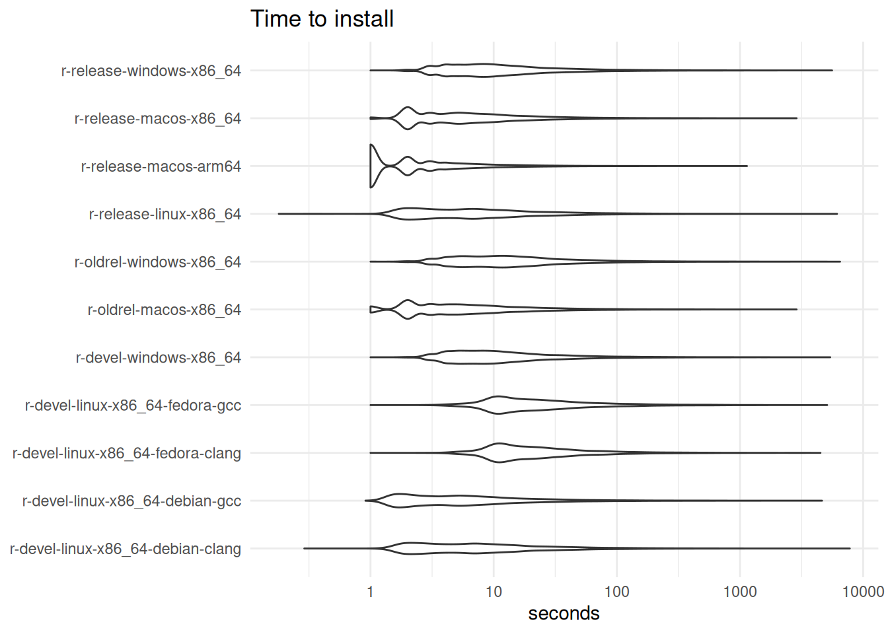
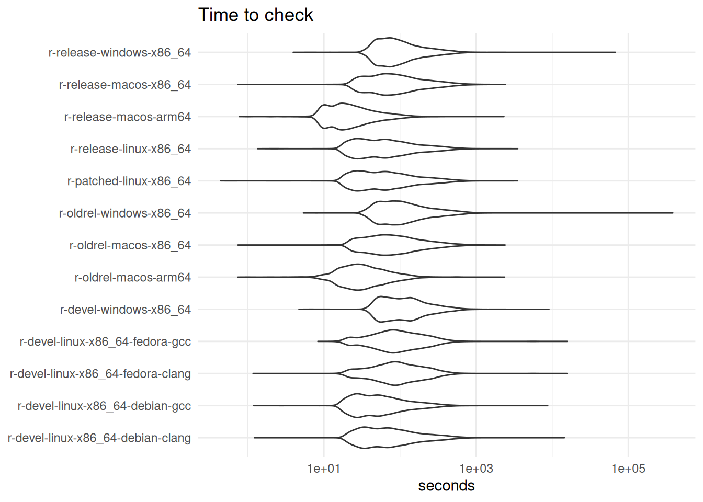
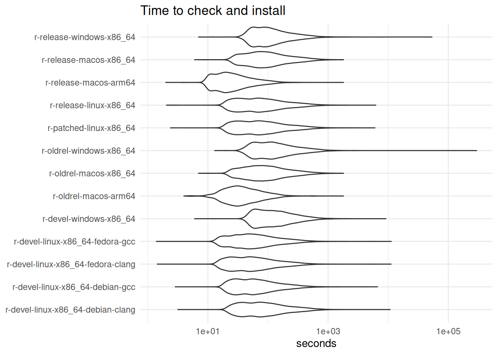
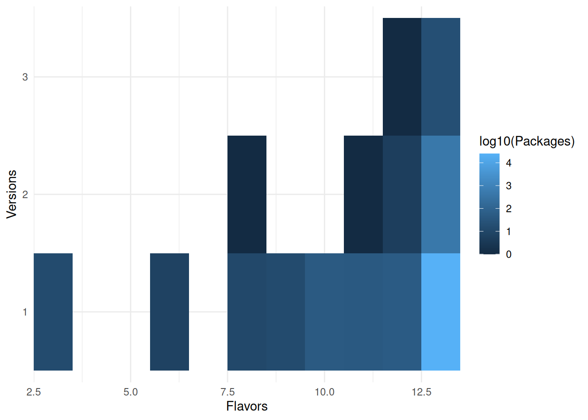
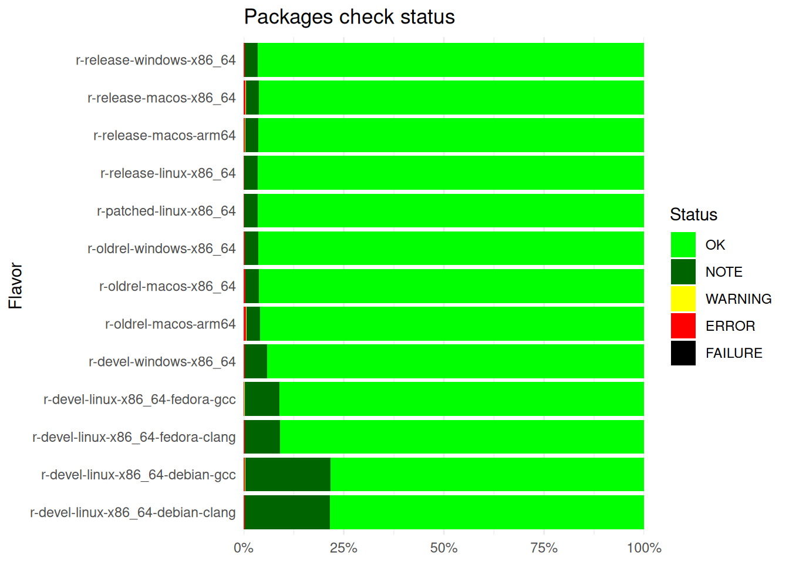

This report checks if the status of packages on CRAN are due to intermittent failures.
Failures defined as warnings, notes or errors without change on:
R version used (if not stable the same svn snapshot)
The package version (Note that CRAN might modify a package without changing the version)
Their dependencies
Reasons of these failures might be because the packages depend on:
Random generation numbers
Flacky external resources
Other ?
Why is this important?
Because package maintainers of dependencies of that package, R core and CRAN team need to check if the failures are false positives.
This report started because it was suggested as something that the R-repositories working group could help the CRAN team.
It makes use of tools::CRAN_check_results to retrieve the data.
library("dplyr")
library("tools", include.only = c("package_dependencies", "CRAN_check_results"))
library("flextable", include.only = c("flextable", "autofit"))
# Use a LOCAL environment to check if files can be overwritten on my computer
local_build <- as.logical(Sys.getenv("LOCAL", "FALSE"))
yc <- readRDS("today.RDS")
tc <- CRAN_check_results()
# Added 2023/03/09: sometimes some flavors are reported without status: Omit those
tc <- tc[!is.na(tc$Status),]
if (!interactive() && !local_build) {
message("Saving today's file.")
saveRDS(tc, file = "today.RDS")
} The checks are from multiple flavors release, devel, old release and patched on multiple machines and configurations.
old_flavors <- readRDS("flavors.RDS")
flavors <- unique(tc$Flavor)
# One flavor now present in all is the r-devel-windows-x86_64: skip
flavors <- setdiff(flavors, "r-devel-windows-x86_64")
proto <- data.frame(r_version = character(),
os = character(),
architecture = character(),
other = character())
flavors_df <- strcapture(
pattern = "r-([[:alnum:]]+)-([[:alnum:]]+)-([[:alnum:]_\\+]+)-?(.*)",
x = flavors,
proto = proto)
# Extract R version used and svn id
h <- "https://www.r-project.org/nosvn/R.check/%s/ggplot2-00check.html"
links <- sprintf(h, flavors)
extract_revision <- function(x) {
r <- readLines(x, 12)[12]
version <- strcapture(pattern = "([[:digit:]]\\.[[:digit:]]\\.[[:digit:]])",
x = r, proto = data.frame(version = character()))
revision <- strcapture(pattern = "(r[[:digit:]]+)", x = r,
proto = data.frame(revision = character()))
cbind(version, revision)
}
revision <- data.frame(version = character(),
revision = character())
for (i in links) {
revision <- rbind(revision, extract_revision(i))
}
flavors_df <- cbind(flavors = flavors, flavors_df, revision)
if (!interactive() && !local_build) {
saveRDS(flavors_df, "flavors.RDS")
}
m <- match(tc$Flavor, flavors_df$flavors)
tc_flavors <- cbind(tc, flavors_df[m, ])
flextable(flavors_df) |>
autofit()flavors | r_version | os | architecture | other | version | revision |
|---|---|---|---|---|---|---|
r-devel-linux-x86_64-debian-clang | devel | linux | x86_64 | debian-clang | r90859 | |
r-devel-linux-x86_64-debian-gcc | devel | linux | x86_64 | debian-gcc | r90874 | |
r-devel-linux-x86_64-fedora-clang | devel | linux | x86_64 | fedora-clang | r90835 | |
r-devel-linux-x86_64-fedora-gcc | devel | linux | x86_64 | fedora-gcc | r90850 | |
r-patched-linux-x86_64 | patched | linux | x86_64 | 4.6.2 | r90868 | |
r-release-linux-x86_64 | release | linux | x86_64 | 4.6.2 | ||
r-release-macos-arm64 | release | macos | arm64 | 4.6.0 | ||
r-release-macos-x86_64 | release | macos | x86_64 | 4.6.0 | ||
r-release-windows-x86_64 | release | windows | x86_64 | 4.6.2 | ||
r-oldrel-macos-arm64 | oldrel | macos | arm64 | 4.5.2 | r89382 | |
r-oldrel-macos-x86_64 | oldrel | macos | x86_64 | 4.5.2 | r89382 | |
r-oldrel-windows-x86_64 | oldrel | windows | x86_64 | 4.5.3 |
It assumes that the same configuration in one package is used for all. Or in other words that the reports of the configuration (svn revision and version) for the A3 package is the same as for all the other packages.
Warning: This assumption is not always true, but this would require to check each log file on each flavor to verify the R and svn id of each package (which could take too much time and resources).
Briefly an introduction of how much effort goes into checking
library("ggplot2")
theme_set(theme_minimal())
tc |>
filter(!is.na(T_install)) |>
ggplot() +
geom_violin(aes(T_install, Flavor)) +
scale_x_log10() +
labs(x = "seconds", title = "Time to install", y = element_blank())
Distribution of install time on each machine.
This means that just to install all the packages on the multiple flavors with a single CPU would take 64 days.
tc |>
filter(!is.na(T_check)) |>
ggplot() +
geom_violin(aes(T_check, Flavor), trim = FALSE) +
scale_x_log10() +
labs(x = "seconds", title = "Time to check", y = element_blank())
Distribution of checking time on each machine.
This means that to check all the packages on the multiple flavors with a single CPU would take 314 days.
tc |>
filter(!is.na(T_total)) |>
ggplot() +
geom_violin(aes(T_total, Flavor)) +
scale_x_log10() +
labs(x = "seconds", title = "Time to check and install", y = element_blank())
Distribution of total time on each machine.
This means that to install and check all the packages with a single CPU would take 388 days.
I don’t know the computational cost of 266 days of CPU (every day), but a rough calculation of 2.5 cents per hour means 232.69 dollars daily dedicated to this.
tc |>
group_by(Package) |>
summarize(Versions = n_distinct(Version)) |>
ungroup() |>
count(Versions, name = "Packages", sort = TRUE) |>
flextable() |>
autofit()Versions | Packages |
|---|---|
1 | 25,196 |
2 | 508 |
3 | 12 |
This was surprising, but sometimes checks have multiple versions. Probably when a new version is added and the system don’t catch it for a certain machine.
tc |>
group_by(Package) |>
summarize(Flavors = n_distinct(Flavor)) |>
ungroup() |>
count(Flavors, name = "Packages", sort = TRUE) |>
flextable() |>
autofit()Flavors | Packages |
|---|---|
13 | 25,539 |
12 | 51 |
10 | 50 |
11 | 34 |
3 | 14 |
8 | 11 |
1 | 8 |
9 | 5 |
2 | 3 |
4 | 1 |
Similarly, often packages are only tested on few configurations.
Combining both we can have packages with few configurations that have multiple versions being tested.
tc |>
group_by(Package) |>
summarize(Versions = as.character(n_distinct(Version)),
Flavors = n_distinct(Flavor)) |>
ungroup() |>
count(Flavors, Versions, name = "Packages") |>
ggplot() +
geom_tile(aes(Flavors, Versions, fill = log10(Packages))) +
scale_x_continuous(expand = expansion())
Most packages are just tested one version.
But focusing on those that have just one version of the package being tested, most of the machines have packages either OK or with some notes.
man_colors <- c("OK" = "green", "NOTE" = "darkgreen",
"WARNING" = "yellow", "ERROR" = "red", "FAILURE" = "black")
tc |>
group_by(Package) |>
filter(n_distinct(Version) == 1) |>
ungroup() |>
group_by(Flavor) |>
count(Status, name = "packages") |>
mutate(perc = packages/sum(packages),
Status = forcats::fct_relevel(Status, names(man_colors))) |>
ggplot() +
geom_col(aes(perc, Flavor, fill = Status)) +
scale_x_continuous(expand = expansion(), labels = scales::percent_format()) +
scale_fill_manual(values = man_colors) +
labs(title = "Packages check status", x = element_blank())
Most frequent status is OK or NOTE on all machines.
If we look at the most frequent status report for packages we can see this table:
ts <- tc |>
group_by(Package) |>
filter(n_distinct(Version) == 1) |>
count(Status, name = "flavors") |>
ungroup() |>
tidyr::pivot_wider(values_from = flavors, names_from = Status,
values_fill = 0) |>
count(OK, NOTE, WARNING, ERROR, FAILURE, name = "packages", sort = TRUE)
download.file("https://cran.r-project.org/web/packages/packages.rds",
destfile = "packages.RDS") # From the help page
ap <- readRDS("packages.RDS") |>
as.data.frame() |>
distinct(Package, .keep_all = TRUE)
ap_bioc <- available.packages(repos = BiocManager::repositories()[1:5])
ap_bioc <- cbind(ap_bioc, Additional_repositories = NA)
ap_colm <- intersect(colnames(ap), colnames(ap_bioc))
ap <- rbind(ap[, ap_colm], ap_bioc[, ap_colm])
head(ts) |>
flextable() |>
autofit()OK | NOTE | WARNING | ERROR | FAILURE | packages |
|---|---|---|---|---|---|
13 | 0 | 0 | 0 | 0 | 17,907 |
11 | 2 | 0 | 0 | 0 | 4,012 |
12 | 0 | 0 | 1 | 0 | 894 |
0 | 13 | 0 | 0 | 0 | 734 |
8 | 5 | 0 | 0 | 0 | 505 |
9 | 4 | 0 | 0 | 0 | 269 |
We can see that the most common occurrences are some sort of OK and notes on checks. We can also check the official results on CRAN.
We can see that 3.03%, 0.14%, 0.10%, 0.10%, 0.02% of packages pass all checks without notes.
Now let’s see which of the notes or failures are due to intermittent issues.
First we need to make sure that we compare the right configurations. They must be the same machine, the same R version and the same svn revision between yesterday and today.
# Compare the previous flavor with today's
m_flavor <- which(flavors_df$flavors %in% old_flavors$flavors)
m_version <- which(flavors_df$version %in% old_flavors$version)
m_revision <- which(flavors_df$revision %in% old_flavors$revision)
tm <- table(c(m_flavor, m_version, m_revision))
compare <- flavors_df$flavors[tm == 3] # Only missing the packages versionNext, compare the status of the packages if the version of the package is the same.
# Find package on the flavors to compare that haven't changed versions
library("dplyr")
tcc <- filter(tc, Flavor %in% compare) |>
select(Flavor, Package, Version, Status) |>
arrange(Flavor, Package)
ycc <- filter(yc, Flavor %in% compare) |>
select(Flavor, Package, Version, Status) |>
arrange(Flavor, Package)
all_checks <- merge(tcc, ycc, by = c("Flavor", "Package"),
suffixes = c(".t", ".y"), all = TRUE)
possible_packages <- all_checks |>
filter(Version.t == Version.y & # Same version
Status.t != Status.y & # Different status
!is.na(Status.y) & # No new version or removed package
!is.na(Status.t)) |>
rename(Today = Status.t, Yesterday = Status.y)
possible_packages |>
select(Package, Flavor, Today, Yesterday, -Version.t, -Version.y) |>
arrange(Package, Flavor) |>
flextable() |>
autofit()Package | Flavor | Today | Yesterday |
|---|---|---|---|
AHMbook | r-devel-linux-x86_64-debian-clang | ERROR | OK |
AQEval | r-devel-linux-x86_64-debian-clang | ERROR | OK |
ARUtools | r-release-windows-x86_64 | ERROR | OK |
AgePopDenom | r-devel-linux-x86_64-debian-clang | ERROR | OK |
AirExposure | r-devel-linux-x86_64-debian-clang | ERROR | OK |
AirMonitor | r-devel-linux-x86_64-debian-clang | ERROR | OK |
AquaBEHER | r-devel-linux-x86_64-debian-clang | ERROR | OK |
Argentum | r-devel-linux-x86_64-debian-clang | ERROR | OK |
AtlasMaker | r-devel-linux-x86_64-debian-clang | ERROR | OK |
AutoWMM | r-release-windows-x86_64 | ERROR | OK |
BAT | r-devel-linux-x86_64-debian-clang | ERROR | OK |
BCHM | r-devel-linux-x86_64-debian-clang | ERROR | NOTE |
BDIB | r-devel-linux-x86_64-debian-clang | ERROR | OK |
BEND | r-devel-linux-x86_64-debian-clang | ERROR | OK |
BIEN | r-devel-linux-x86_64-debian-clang | ERROR | OK |
BIOMASS | r-devel-linux-x86_64-debian-clang | ERROR | OK |
BOLDconnectR | r-devel-linux-x86_64-debian-clang | ERROR | OK |
BTIME | r-devel-linux-x86_64-debian-clang | ERROR | OK |
BTSPAS | r-devel-linux-x86_64-debian-clang | ERROR | OK |
BayLum | r-devel-linux-x86_64-debian-clang | ERROR | OK |
BayesCACE | r-devel-linux-x86_64-debian-clang | ERROR | OK |
BayesGWQS | r-devel-linux-x86_64-debian-clang | ERROR | NOTE |
BayesMoFo | r-devel-linux-x86_64-debian-clang | ERROR | OK |
BayesPostEst | r-devel-linux-x86_64-debian-clang | ERROR | OK |
BayesRS | r-devel-linux-x86_64-debian-clang | ERROR | OK |
BayesTools | r-devel-linux-x86_64-debian-clang | ERROR | OK |
BayesTwin | r-devel-linux-x86_64-debian-clang | ERROR | NOTE |
BayesianMediationA | r-devel-linux-x86_64-debian-clang | ERROR | NOTE |
BeQut | r-devel-linux-x86_64-debian-clang | ERROR | OK |
BioIndex | r-devel-linux-x86_64-debian-clang | ERROR | OK |
BoundaryStats | r-devel-linux-x86_64-debian-clang | ERROR | OK |
BrazilMet | r-devel-linux-x86_64-debian-clang | ERROR | OK |
CARBayes | r-devel-linux-x86_64-debian-clang | ERROR | NOTE |
CARBayesST | r-devel-linux-x86_64-debian-clang | ERROR | NOTE |
CAST | r-devel-linux-x86_64-debian-clang | ERROR | OK |
CCAMLRGIS | r-devel-linux-x86_64-debian-clang | ERROR | OK |
CDSE | r-devel-linux-x86_64-debian-clang | ERROR | NOTE |
CKNNRLD | r-devel-linux-x86_64-debian-clang | ERROR | OK |
CLimd | r-devel-linux-x86_64-debian-clang | ERROR | OK |
CMIP6VisR | r-devel-linux-x86_64-debian-clang | ERROR | OK |
COMBO | r-devel-linux-x86_64-debian-clang | ERROR | OK |
CaseBasedReasoning | r-release-windows-x86_64 | WARNING | OK |
CatastRo | r-devel-linux-x86_64-debian-clang | ERROR | OK |
CensSpatial | r-devel-linux-x86_64-debian-clang | ERROR | NOTE |
ClimaRep | r-devel-linux-x86_64-debian-clang | ERROR | OK |
CoDaLoMic | r-devel-linux-x86_64-debian-clang | ERROR | OK |
CompositionalSR | r-devel-linux-x86_64-debian-clang | ERROR | OK |
ConconiAnaerobicThresholdTest | r-devel-linux-x86_64-debian-clang | ERROR | OK |
CoordinateCleaner | r-devel-linux-x86_64-debian-clang | ERROR | OK |
CropScapeR | r-devel-linux-x86_64-debian-clang | ERROR | OK |
CrownScorchTLS | r-devel-linux-x86_64-debian-clang | ERROR | OK |
CspStandSegmentation | r-devel-linux-x86_64-debian-clang | ERROR | OK |
CvmortalityMult | r-devel-linux-x86_64-debian-clang | ERROR | OK |
DAST | r-devel-linux-x86_64-debian-clang | ERROR | OK |
DEPONS2R | r-devel-linux-x86_64-debian-clang | ERROR | OK |
DMMF | r-devel-linux-x86_64-debian-clang | ERROR | OK |
DRHotNet | r-devel-linux-x86_64-debian-clang | ERROR | NOTE |
DTEAssurance | r-devel-linux-x86_64-debian-clang | ERROR | OK |
DWBmodelUN | r-devel-linux-x86_64-debian-clang | ERROR | OK |
Directional | r-devel-linux-x86_64-debian-clang | ERROR | OK |
DisasterAlert | r-devel-linux-x86_64-debian-clang | ERROR | OK |
DonutMap | r-devel-linux-x86_64-debian-clang | ERROR | OK |
DrivePlotR | r-devel-linux-x86_64-debian-clang | ERROR | OK |
EBASE | r-devel-linux-x86_64-debian-clang | ERROR | NOTE |
EMbC | r-devel-linux-x86_64-debian-clang | ERROR | NOTE |
ENMTools | r-devel-linux-x86_64-debian-clang | ERROR | OK |
ENMeval | r-devel-linux-x86_64-debian-clang | ERROR | OK |
ERA5Flux | r-devel-linux-x86_64-debian-clang | ERROR | OK |
EWOC.Comb | r-devel-linux-x86_64-debian-clang | ERROR | OK |
Ecfun | r-devel-linux-x86_64-debian-clang | ERROR | OK |
EcoCleanR | r-devel-linux-x86_64-debian-clang | ERROR | OK |
EcoDiet | r-devel-linux-x86_64-debian-clang | ERROR | OK |
EmissV | r-devel-linux-x86_64-debian-clang | ERROR | OK |
Euclimatch | r-devel-linux-x86_64-debian-clang | ERROR | OK |
ExposR | r-devel-linux-x86_64-debian-clang | ERROR | OK |
ExtractTrainData | r-devel-linux-x86_64-debian-clang | ERROR | NOTE |
FIESTA | r-devel-linux-x86_64-debian-clang | ERROR | OK |
FIESTAutils | r-devel-linux-x86_64-debian-clang | ERROR | OK |
FORTLS | r-devel-linux-x86_64-debian-clang | ERROR | OK |
FedData | r-devel-linux-x86_64-debian-clang | ERROR | OK |
FinancialInstrument | r-devel-linux-x86_64-debian-clang | OK | WARNING |
FjordLight | r-devel-linux-x86_64-debian-clang | ERROR | OK |
ForestGapR | r-devel-linux-x86_64-debian-clang | ERROR | OK |
ForestTools | r-devel-linux-x86_64-debian-clang | ERROR | OK |
GCD | r-devel-linux-x86_64-debian-clang | ERROR | NOTE |
GGoutlieR | r-devel-linux-x86_64-debian-clang | ERROR | OK |
GHCNr | r-devel-linux-x86_64-debian-clang | ERROR | OK |
GIFT | r-devel-linux-x86_64-debian-clang | ERROR | OK |
GISSB | r-devel-linux-x86_64-debian-clang | ERROR | OK |
GInSARCorW | r-devel-linux-x86_64-debian-clang | ERROR | NOTE |
GLCMTextures | r-devel-linux-x86_64-debian-clang | ERROR | OK |
GREENeR | r-devel-linux-x86_64-debian-clang | ERROR | OK |
GSEMA | r-release-windows-x86_64 | OK | ERROR |
GWSDAT | r-devel-linux-x86_64-debian-clang | ERROR | OK |
GapAnalysis | r-devel-linux-x86_64-debian-clang | ERROR | OK |
GeNetIt | r-devel-linux-x86_64-debian-clang | ERROR | OK |
GeoAdjust | r-devel-linux-x86_64-debian-clang | ERROR | OK |
GeoDensityR | r-devel-linux-x86_64-debian-clang | ERROR | OK |
GeoIndexR | r-devel-linux-x86_64-debian-clang | ERROR | OK |
GeoThinneR | r-devel-linux-x86_64-debian-clang | ERROR | OK |
GeoWeightedModel | r-devel-linux-x86_64-debian-clang | ERROR | OK |
HDSpatialScan | r-devel-linux-x86_64-debian-clang | ERROR | OK |
HYPEtools | r-devel-linux-x86_64-debian-clang | ERROR | OK |
HurreconR | r-devel-linux-x86_64-debian-clang | ERROR | OK |
ICESat2VegR | r-devel-linux-x86_64-debian-clang | ERROR | OK |
ICvectorfields | r-devel-linux-x86_64-debian-clang | ERROR | OK |
IIVpredictor | r-devel-linux-x86_64-debian-clang | ERROR | OK |
ILORA | r-devel-linux-x86_64-debian-clang | ERROR | OK |
ISRaD | r-devel-linux-x86_64-debian-clang | ERROR | NOTE |
IceSat2R | r-devel-linux-x86_64-debian-clang | ERROR | OK |
InterSIM | r-devel-linux-x86_64-fedora-gcc | NOTE | OK |
InterpolateR | r-devel-linux-x86_64-debian-clang | ERROR | OK |
IsoriX | r-devel-linux-x86_64-debian-clang | ERROR | NOTE |
JMbayes | r-devel-linux-x86_64-debian-clang | ERROR | OK |
JointAI | r-devel-linux-x86_64-debian-clang | ERROR | NOTE |
KMLtoSHAPE | r-devel-linux-x86_64-debian-clang | ERROR | OK |
LAIr | r-devel-linux-x86_64-debian-clang | ERROR | NOTE |
LPDynR | r-devel-linux-x86_64-debian-clang | ERROR | OK |
LST | r-devel-linux-x86_64-debian-clang | ERROR | OK |
LabourMarketAreas | r-devel-linux-x86_64-debian-clang | ERROR | NOTE |
LifemapR | r-devel-linux-x86_64-debian-clang | ERROR | OK |
MBGapp | r-devel-linux-x86_64-debian-clang | ERROR | OK |
MBHdesign | r-devel-linux-x86_64-debian-clang | ERROR | OK |
MBNMAdose | r-devel-linux-x86_64-debian-clang | ERROR | OK |
MBNMAtime | r-devel-linux-x86_64-debian-clang | ERROR | OK |
MIAmaxent | r-devel-linux-x86_64-debian-clang | ERROR | OK |
MLE | r-devel-linux-x86_64-debian-clang | ERROR | OK |
MLID | r-devel-linux-x86_64-debian-clang | ERROR | NOTE |
MODISTools | r-devel-linux-x86_64-debian-clang | ERROR | OK |
MRG | r-devel-linux-x86_64-debian-clang | ERROR | OK |
MainExistingDatasets | r-devel-linux-x86_64-debian-clang | ERROR | OK |
Mapinguari | r-devel-linux-x86_64-debian-clang | ERROR | OK |
MarineChain | r-devel-linux-x86_64-debian-clang | ERROR | OK |
MassWateR | r-devel-linux-x86_64-debian-clang | ERROR | OK |
MatchingPursuit | r-devel-linux-x86_64-debian-clang | ERROR | OK |
MazamaLocationUtils | r-devel-linux-x86_64-debian-clang | ERROR | OK |
MazamaSpatialPlots | r-devel-linux-x86_64-debian-clang | ERROR | OK |
MetaLandSim | r-devel-linux-x86_64-debian-clang | ERROR | NOTE |
MetabolicSurv | r-release-windows-x86_64 | WARNING | NOTE |
MigConnectivity | r-devel-linux-x86_64-debian-clang | ERROR | OK |
MisRepARMA | r-devel-linux-x86_64-debian-clang | ERROR | OK |
MixSIAR | r-devel-linux-x86_64-debian-clang | ERROR | NOTE |
Mobius | r-devel-linux-x86_64-debian-clang | ERROR | OK |
ModelMap | r-devel-linux-x86_64-debian-clang | ERROR | OK |
MultiscaleDTM | r-devel-linux-x86_64-debian-clang | ERROR | OK |
MultiscaleSCP | r-devel-linux-x86_64-debian-clang | ERROR | OK |
NAPrior | r-devel-linux-x86_64-debian-clang | ERROR | OK |
NCC | r-devel-linux-x86_64-debian-clang | ERROR | OK |
NMADTA | r-devel-linux-x86_64-debian-clang | ERROR | OK |
NMF | r-devel-linux-x86_64-fedora-gcc | NOTE | OK |
NetLogoR | r-devel-linux-x86_64-debian-clang | ERROR | OK |
NobBS | r-devel-linux-x86_64-debian-clang | ERROR | OK |
OCNet | r-devel-linux-x86_64-debian-clang | ERROR | OK |
OSMscale | r-devel-linux-x86_64-debian-clang | ERROR | OK |
OTBsegm | r-devel-linux-x86_64-debian-clang | ERROR | OK |
OceanTracer | r-devel-linux-x86_64-debian-clang | ERROR | OK |
OpenLand | r-devel-linux-x86_64-debian-clang | ERROR | OK |
OpenStreetMap | r-devel-linux-x86_64-debian-clang | ERROR | NOTE |
Orcs | r-devel-linux-x86_64-debian-clang | ERROR | OK |
Ostats | r-devel-linux-x86_64-debian-clang | ERROR | OK |
OtsuFire | r-devel-linux-x86_64-debian-clang | ERROR | NOTE |
OtsuSeg | r-devel-linux-x86_64-debian-clang | ERROR | OK |
PGRdup | r-release-windows-x86_64 | OK | ERROR |
PHENTHAUproc | r-devel-linux-x86_64-debian-clang | ERROR | OK |
PVAClone | r-devel-linux-x86_64-debian-clang | ERROR | OK |
PathwayVote | r-release-windows-x86_64 | OK | ERROR |
PersomicsArray | r-devel-linux-x86_64-debian-clang | ERROR | OK |
PhytoIn | r-devel-linux-x86_64-debian-clang | ERROR | OK |
PiC | r-devel-linux-x86_64-debian-clang | ERROR | OK |
PlanetNICFI | r-devel-linux-x86_64-debian-clang | ERROR | OK |
PointedSDMs | r-devel-linux-x86_64-debian-clang | ERROR | OK |
Poly4AT | r-devel-linux-x86_64-debian-clang | ERROR | OK |
PopGenHelpR | r-devel-linux-x86_64-debian-clang | ERROR | OK |
PopGenReport | r-devel-linux-x86_64-debian-clang | ERROR | OK |
PottsUtils | r-devel-linux-x86_64-debian-clang | ERROR | OK |
PoweREST | r-devel-linux-x86_64-debian-clang | ERROR | OK |
QBMS | r-devel-linux-x86_64-debian-clang | ERROR | OK |
QRAGadget | r-devel-linux-x86_64-debian-clang | ERROR | OK |
R2jags | r-devel-linux-x86_64-debian-clang | ERROR | OK |
RAC | r-devel-linux-x86_64-debian-clang | ERROR | OK |
RCGLS | r-devel-linux-x86_64-debian-clang | ERROR | NOTE |
RCzechia | r-devel-linux-x86_64-debian-clang | ERROR | OK |
RFmerge | r-devel-linux-x86_64-debian-clang | ERROR | OK |
RFplus | r-devel-linux-x86_64-debian-clang | ERROR | OK |
RGDrivers | r-devel-linux-x86_64-debian-clang | ERROR | OK |
RGENERATEPREC | r-devel-linux-x86_64-debian-clang | ERROR | OK |
RLumShiny | r-devel-linux-x86_64-debian-clang | ERROR | OK |
RPhosFate | r-devel-linux-x86_64-debian-clang | ERROR | OK |
RPyGeo | r-devel-linux-x86_64-debian-clang | ERROR | OK |
RRgeo | r-devel-linux-x86_64-debian-clang | ERROR | OK |
RStoolbox | r-devel-linux-x86_64-debian-clang | ERROR | OK |
RTextTools | r-devel-linux-x86_64-debian-clang | NOTE | ERROR |
RWsearch | r-release-windows-x86_64 | OK | ERROR |
RcamelsCL | r-devel-linux-x86_64-debian-clang | ERROR | OK |
RchivalTag | r-devel-linux-x86_64-debian-clang | ERROR | OK |
RcmdrPlugin.RMTCJags | r-devel-linux-x86_64-debian-clang | ERROR | NOTE |
ReadDIM | r-devel-linux-x86_64-debian-clang | ERROR | NOTE |
Recocrop | r-devel-linux-x86_64-debian-clang | ERROR | OK |
RecoverMetricsR | r-devel-linux-x86_64-debian-clang | ERROR | OK |
Rglottography | r-devel-linux-x86_64-debian-clang | ERROR | OK |
RiskMap | r-devel-linux-x86_64-debian-clang | ERROR | OK |
Rlibkdv | r-devel-linux-x86_64-debian-clang | ERROR | OK |
RoBTT | r-devel-linux-x86_64-debian-clang | ERROR | OK |
RoME | r-devel-linux-x86_64-debian-clang | ERROR | OK |
RobustBayesianCopas | r-devel-linux-x86_64-debian-clang | ERROR | NOTE |
Romeb | r-devel-linux-x86_64-debian-clang | ERROR | OK |
Rquefts | r-devel-linux-x86_64-debian-clang | ERROR | OK |
Rsagacmd | r-devel-linux-x86_64-debian-clang | ERROR | OK |
Rtrack | r-devel-linux-x86_64-debian-clang | ERROR | OK |
RuHere | r-devel-linux-x86_64-debian-clang | ERROR | OK |
S3VS | r-devel-linux-x86_64-debian-clang | ERROR | OK |
S4DM | r-devel-linux-x86_64-debian-clang | ERROR | OK |
SAME | r-devel-linux-x86_64-debian-clang | ERROR | NOTE |
SAiVE | r-devel-linux-x86_64-debian-clang | ERROR | OK |
SDALGCP2 | r-devel-linux-x86_64-debian-clang | ERROR | OK |
SDGdetector | r-devel-linux-x86_64-debian-clang | ERROR | OK |
SDMtune | r-devel-linux-x86_64-debian-clang | ERROR | OK |
SEAHORS | r-devel-linux-x86_64-debian-clang | ERROR | OK |
SESraster | r-devel-linux-x86_64-debian-clang | ERROR | OK |
SHARK4R | r-devel-linux-x86_64-debian-clang | ERROR | OK |
SIBER | r-devel-linux-x86_64-debian-clang | ERROR | NOTE |
SPARTAAS | r-devel-linux-x86_64-debian-clang | ERROR | OK |
SSDM | r-devel-linux-x86_64-debian-clang | ERROR | OK |
SSIMmap | r-devel-linux-x86_64-debian-clang | ERROR | OK |
SUMMER | r-devel-linux-x86_64-debian-clang | ERROR | OK |
SUNGEO | r-devel-linux-x86_64-debian-clang | ERROR | OK |
Saylac | r-devel-linux-x86_64-debian-clang | ERROR | OK |
SeaGraphs | r-devel-linux-x86_64-debian-clang | ERROR | OK |
Sequential | r-release-windows-x86_64 | OK | ERROR |
ShapePattern | r-devel-linux-x86_64-debian-clang | ERROR | OK |
ShapeSelectForest | r-devel-linux-x86_64-debian-clang | ERROR | NOTE |
SiMRiv | r-devel-linux-x86_64-debian-clang | ERROR | OK |
SmoothPLS | r-release-windows-x86_64 | ERROR | OK |
SnowData | r-devel-linux-x86_64-debian-clang | ERROR | OK |
SoilSaltIndex | r-devel-linux-x86_64-debian-clang | ERROR | OK |
SpaDES.core | r-devel-linux-x86_64-debian-clang | ERROR | OK |
SpaDES.tools | r-devel-linux-x86_64-debian-clang | ERROR | OK |
SpatGRID | r-devel-linux-x86_64-debian-clang | ERROR | OK |
SpatialDownscaling | r-devel-linux-x86_64-debian-clang | ERROR | OK |
SpatialKDE | r-devel-linux-x86_64-debian-clang | ERROR | OK |
SpatialPosition | r-devel-linux-x86_64-debian-clang | ERROR | OK |
SppTrend | r-devel-linux-x86_64-debian-clang | ERROR | OK |
StormR | r-devel-linux-x86_64-debian-clang | ERROR | OK |
SurfRough | r-devel-linux-x86_64-debian-clang | ERROR | OK |
SurfaceTortoise | r-devel-linux-x86_64-debian-clang | ERROR | OK |
SurviMChd | r-devel-linux-x86_64-debian-clang | ERROR | OK |
TCHazaRds | r-devel-linux-x86_64-debian-clang | ERROR | OK |
TOC | r-devel-linux-x86_64-debian-clang | ERROR | NOTE |
TSGenerator | r-devel-linux-x86_64-debian-clang | ERROR | OK |
TUFLOWR | r-devel-linux-x86_64-debian-clang | ERROR | OK |
TemporalModelR | r-devel-linux-x86_64-debian-clang | ERROR | OK |
Tivy | r-devel-linux-x86_64-debian-clang | ERROR | OK |
TrackTrap | r-devel-linux-x86_64-debian-clang | ERROR | OK |
TreeBUGS | r-devel-linux-x86_64-debian-clang | ERROR | OK |
TroublemakeR | r-devel-linux-x86_64-debian-clang | ERROR | OK |
Ts | r-devel-linux-x86_64-debian-clang | ERROR | OK |
UHM | r-devel-linux-x86_64-debian-clang | ERROR | OK |
USE | r-devel-linux-x86_64-debian-clang | ERROR | OK |
UnalR | r-devel-linux-x86_64-debian-clang | ERROR | OK |
VasGBIF | r-devel-linux-x86_64-debian-clang | ERROR | OK |
VoxR | r-devel-linux-x86_64-debian-clang | ERROR | OK |
WCM | r-devel-linux-x86_64-debian-clang | ERROR | NOTE |
WEGE | r-devel-linux-x86_64-debian-clang | ERROR | OK |
WaterBalanceR | r-devel-linux-x86_64-debian-clang | ERROR | OK |
WhatsR | r-devel-linux-x86_64-debian-clang | ERROR | OK |
ZonationR | r-devel-linux-x86_64-debian-clang | ERROR | OK |
abn | r-devel-linux-x86_64-debian-clang | ERROR | OK |
abstr | r-devel-linux-x86_64-debian-clang | ERROR | OK |
acdcR | r-devel-linux-x86_64-debian-clang | ERROR | OK |
actiwalkability | r-devel-linux-x86_64-debian-clang | ERROR | OK |
adw | r-devel-linux-x86_64-debian-clang | ERROR | OK |
aelab | r-devel-linux-x86_64-debian-clang | ERROR | OK |
affinity | r-devel-linux-x86_64-debian-clang | ERROR | OK |
afthd | r-devel-linux-x86_64-debian-clang | ERROR | OK |
ag5Tools | r-devel-linux-x86_64-debian-clang | ERROR | OK |
agRee | r-devel-linux-x86_64-debian-clang | ERROR | NOTE |
aggreCAT | r-devel-linux-x86_64-debian-clang | ERROR | OK |
agricolaeplotr | r-devel-linux-x86_64-debian-clang | ERROR | OK |
agriwater | r-devel-linux-x86_64-debian-clang | ERROR | OK |
ale | r-release-windows-x86_64 | ERROR | OK |
altmeta | r-devel-linux-x86_64-debian-clang | ERROR | OK |
amadeus | r-devel-linux-x86_64-debian-clang | ERROR | OK |
amt | r-devel-linux-x86_64-debian-clang | ERROR | OK |
angstroms | r-devel-linux-x86_64-debian-clang | ERROR | NOTE |
antaresViz | r-devel-linux-x86_64-debian-clang | ERROR | OK |
appeears | r-devel-linux-x86_64-debian-clang | ERROR | OK |
arakno | r-devel-linux-x86_64-debian-clang | ERROR | OK |
arcgis | r-devel-linux-x86_64-debian-clang | ERROR | OK |
arcgislayers | r-devel-linux-x86_64-debian-clang | ERROR | OK |
arcpullr | r-devel-linux-x86_64-debian-clang | ERROR | OK |
arete | r-devel-linux-x86_64-debian-clang | ERROR | OK |
argoFloats | r-devel-linux-x86_64-debian-clang | OK | ERROR |
arrow | r-oldrel-macos-x86_64 | OK | ERROR |
ascotraceR | r-devel-linux-x86_64-debian-clang | ERROR | OK |
asnipe | r-devel-linux-x86_64-debian-clang | ERROR | NOTE |
assignR | r-devel-linux-x86_64-debian-clang | ERROR | OK |
atakrig | r-devel-linux-x86_64-debian-clang | ERROR | OK |
atpolR | r-devel-linux-x86_64-debian-clang | ERROR | NOTE |
auRoc | r-devel-linux-x86_64-debian-clang | ERROR | NOTE |
autoMR | r-devel-linux-x86_64-debian-clang | ERROR | OK |
avstrat | r-devel-linux-x86_64-debian-clang | ERROR | OK |
aws.wrfsmn | r-devel-linux-x86_64-debian-clang | ERROR | OK |
b3gbi | r-devel-linux-x86_64-debian-clang | ERROR | OK |
bacistool | r-devel-linux-x86_64-debian-clang | ERROR | NOTE |
baker | r-devel-linux-x86_64-debian-clang | ERROR | OK |
bamdit | r-devel-linux-x86_64-debian-clang | ERROR | OK |
bamm | r-devel-linux-x86_64-debian-clang | ERROR | OK |
bangladesh | r-devel-linux-x86_64-debian-clang | ERROR | OK |
barrks | r-devel-linux-x86_64-debian-clang | ERROR | NOTE |
basemaps | r-devel-linux-x86_64-debian-clang | ERROR | OK |
basf | r-devel-linux-x86_64-debian-clang | ERROR | OK |
baskoptr | r-devel-linux-x86_64-debian-clang | ERROR | NOTE |
basksim | r-devel-linux-x86_64-debian-clang | ERROR | OK |
baskwrap | r-devel-linux-x86_64-debian-clang | ERROR | OK |
bayesEO | r-devel-linux-x86_64-debian-clang | ERROR | OK |
bayesMRM | r-devel-linux-x86_64-debian-clang | ERROR | OK |
bayesPop | r-devel-linux-x86_64-debian-clang | ERROR | OK |
bayescount | r-devel-linux-x86_64-debian-clang | ERROR | OK |
bayesmix | r-devel-linux-x86_64-debian-clang | ERROR | OK |
bayesmove | r-devel-linux-x86_64-debian-clang | ERROR | OK |
bayesmsm | r-devel-linux-x86_64-debian-clang | ERROR | OK |
baymedr | r-release-windows-x86_64 | WARNING | OK |
bcmaps | r-devel-linux-x86_64-debian-clang | ERROR | OK |
bdc | r-devel-linux-x86_64-debian-clang | ERROR | OK |
bdl | r-devel-linux-x86_64-debian-clang | ERROR | OK |
bdribs | r-devel-linux-x86_64-debian-clang | ERROR | OK |
bean | r-devel-linux-x86_64-debian-clang | ERROR | OK |
beaver | r-devel-linux-x86_64-debian-clang | ERROR | OK |
belg | r-devel-linux-x86_64-debian-clang | ERROR | NOTE |
bespatial | r-devel-linux-x86_64-debian-clang | ERROR | OK |
betaStability | r-devel-linux-x86_64-debian-clang | ERROR | OK |
bhmbasket | r-devel-linux-x86_64-debian-clang | ERROR | OK |
bioRad | r-devel-linux-x86_64-debian-clang | ERROR | OK |
bioclim | r-devel-linux-x86_64-debian-clang | ERROR | NOTE |
biofetchR | r-devel-linux-x86_64-debian-clang | ERROR | OK |
biomes | r-devel-linux-x86_64-debian-clang | ERROR | OK |
biomod2 | r-devel-linux-x86_64-debian-clang | ERROR | OK |
bipd | r-devel-linux-x86_64-debian-clang | ERROR | NOTE |
birdring | r-devel-linux-x86_64-debian-clang | ERROR | NOTE |
bitfield | r-devel-linux-x86_64-debian-clang | ERROR | OK |
bivariateLeaflet | r-devel-linux-x86_64-debian-clang | ERROR | OK |
bivariatemaps | r-devel-linux-x86_64-debian-clang | ERROR | OK |
blackmarbler | r-devel-linux-x86_64-debian-clang | ERROR | OK |
blockCV | r-devel-linux-x86_64-debian-clang | ERROR | OK |
blrm | r-devel-linux-x86_64-debian-clang | ERROR | NOTE |
bluebike | r-devel-linux-x86_64-debian-clang | ERROR | NOTE |
bluertopo | r-devel-linux-x86_64-debian-clang | ERROR | OK |
blueterra | r-devel-linux-x86_64-debian-clang | ERROR | OK |
bml | r-devel-linux-x86_64-debian-clang | ERROR | OK |
bmstdr | r-devel-linux-x86_64-debian-clang | ERROR | OK |
bnma | r-devel-linux-x86_64-debian-clang | ERROR | NOTE |
boral | r-devel-linux-x86_64-debian-clang | ERROR | OK |
buzzMed | r-devel-linux-x86_64-debian-clang | ERROR | OK |
camtrapR | r-devel-linux-x86_64-debian-clang | ERROR | OK |
canaper | r-devel-linux-x86_64-debian-clang | ERROR | OK |
caretSDM | r-devel-linux-x86_64-debian-clang | ERROR | OK |
cartograflow | r-devel-linux-x86_64-debian-clang | ERROR | OK |
cartography | r-devel-linux-x86_64-debian-clang | ERROR | OK |
cati | r-devel-linux-x86_64-debian-clang | ERROR | OK |
cdlTools | r-devel-linux-x86_64-debian-clang | ERROR | OK |
cdlsim | r-devel-linux-x86_64-debian-clang | ERROR | OK |
cdmetapopR | r-devel-linux-x86_64-debian-clang | ERROR | OK |
cdparcoord | r-devel-linux-x86_64-debian-clang | NOTE | WARNING |
ceramic | r-devel-linux-x86_64-debian-clang | ERROR | OK |
cercospoRa | r-devel-linux-x86_64-debian-clang | ERROR | OK |
cffdrs | r-devel-linux-x86_64-debian-clang | ERROR | OK |
cg | r-release-windows-x86_64 | WARNING | OK |
charisma | r-devel-linux-x86_64-debian-clang | ERROR | OK |
chillR | r-devel-linux-x86_64-debian-clang | ERROR | OK |
chirps | r-devel-linux-x86_64-debian-clang | ERROR | OK |
cholera | r-devel-linux-x86_64-debian-clang | ERROR | OK |
chooseGCM | r-devel-linux-x86_64-debian-clang | ERROR | OK |
chopin | r-devel-linux-x86_64-debian-clang | ERROR | OK |
circda | r-devel-linux-x86_64-debian-clang | ERROR | OK |
clc | r-devel-linux-x86_64-debian-clang | ERROR | NOTE |
clhs | r-devel-linux-x86_64-debian-clang | ERROR | NOTE |
clim4health | r-devel-linux-x86_64-debian-clang | ERROR | OK |
climateStability | r-devel-linux-x86_64-debian-clang | ERROR | NOTE |
climatehealth | r-devel-linux-x86_64-debian-clang | ERROR | OK |
climetrics | r-devel-linux-x86_64-debian-clang | ERROR | OK |
climodr | r-devel-linux-x86_64-debian-clang | ERROR | OK |
clustTMB | r-devel-linux-x86_64-fedora-clang | FAILURE | ERROR |
cmsaf | r-devel-linux-x86_64-debian-clang | ERROR | OK |
cmsafops | r-devel-linux-x86_64-debian-clang | ERROR | OK |
cmsafvis | r-devel-linux-x86_64-debian-clang | ERROR | NOTE |
cnmap | r-devel-linux-x86_64-debian-clang | ERROR | OK |
codewhere | r-release-windows-x86_64 | ERROR | OK |
coiR | r-devel-linux-x86_64-debian-clang | ERROR | OK |
colleyRstats | r-devel-linux-x86_64-fedora-clang | ERROR | OK |
collinear | r-devel-linux-x86_64-debian-clang | ERROR | OK |
colorist | r-devel-linux-x86_64-debian-clang | ERROR | OK |
commecometrics | r-devel-linux-x86_64-debian-clang | ERROR | OK |
comorosmaps | r-devel-linux-x86_64-debian-clang | ERROR | OK |
controlledburn | r-devel-linux-x86_64-debian-clang | ERROR | OK |
convergEU | r-devel-linux-x86_64-debian-clang | ERROR | OK |
cooltools | r-devel-linux-x86_64-debian-clang | ERROR | OK |
coreCT | r-devel-linux-x86_64-debian-clang | ERROR | NOTE |
corridoR | r-devel-linux-x86_64-debian-clang | ERROR | OK |
cosimmr | r-devel-linux-x86_64-debian-clang | ERROR | OK |
coveR2 | r-devel-linux-x86_64-debian-clang | ERROR | OK |
covid19sf | r-devel-linux-x86_64-debian-clang | ERROR | OK |
cricketr | r-devel-linux-x86_64-debian-clang | NOTE | WARNING |
crmPack | r-devel-linux-x86_64-debian-clang | ERROR | OK |
cropDemand | r-devel-linux-x86_64-debian-clang | ERROR | OK |
cropZoning | r-devel-linux-x86_64-debian-clang | ERROR | OK |
crossnma | r-devel-linux-x86_64-debian-clang | ERROR | OK |
crownsegmentr | r-devel-linux-x86_64-debian-clang | ERROR | OK |
crstools | r-devel-linux-x86_64-debian-clang | ERROR | OK |
crsuggest | r-devel-linux-x86_64-debian-clang | ERROR | OK |
csa | r-devel-linux-x86_64-debian-clang | ERROR | OK |
csmaps | r-devel-linux-x86_64-debian-clang | ERROR | OK |
csodata | r-devel-linux-x86_64-debian-clang | ERROR | OK |
csquares | r-devel-linux-x86_64-debian-clang | ERROR | OK |
ctmcmove | r-devel-linux-x86_64-debian-clang | ERROR | OK |
ctmm | r-devel-linux-x86_64-debian-clang | ERROR | OK |
cubble | r-devel-linux-x86_64-debian-clang | ERROR | NOTE |
cvdprevent | r-devel-linux-x86_64-debian-clang | ERROR | OK |
dPCP | r-devel-linux-x86_64-debian-clang | ERROR | OK |
dRiftDM | r-release-windows-x86_64 | OK | ERROR |
damAOI | r-devel-linux-x86_64-debian-clang | ERROR | OK |
dartR | r-devel-linux-x86_64-debian-clang | ERROR | OK |
dartR.captive | r-devel-linux-x86_64-debian-clang | ERROR | OK |
dartR.popgen | r-devel-linux-x86_64-debian-clang | ERROR | OK |
dartR.sim | r-devel-linux-x86_64-debian-clang | ERROR | OK |
dartR.spatial | r-devel-linux-x86_64-debian-clang | ERROR | OK |
data4health | r-devel-linux-x86_64-debian-clang | ERROR | OK |
data4health | r-release-windows-x86_64 | ERROR | OK |
datamuseum | r-devel-linux-x86_64-debian-clang | ERROR | OK |
daymetr | r-devel-linux-x86_64-debian-clang | ERROR | OK |
dbSpatial | r-devel-linux-x86_64-debian-clang | ERROR | OK |
dclone | r-devel-linux-x86_64-debian-clang | ERROR | OK |
dcmle | r-devel-linux-x86_64-debian-clang | ERROR | OK |
decisionSupport | r-devel-linux-x86_64-debian-clang | ERROR | OK |
deckglgeoarrow | r-devel-linux-x86_64-debian-clang | ERROR | OK |
deforestable | r-devel-linux-x86_64-debian-clang | ERROR | OK |
dgpsi | r-devel-linux-x86_64-debian-clang | ERROR | OK |
dgtf | r-release-windows-x86_64 | OK | ERROR |
diffeR | r-devel-linux-x86_64-debian-clang | ERROR | NOTE |
disaggregation | r-devel-linux-x86_64-debian-clang | ERROR | OK |
disdat | r-devel-linux-x86_64-debian-clang | ERROR | OK |
diseasemapping | r-devel-linux-x86_64-debian-clang | ERROR | NOTE |
dismo | r-devel-linux-x86_64-debian-clang | ERROR | OK |
dispeRse | r-devel-linux-x86_64-debian-clang | ERROR | OK |
dissever | r-devel-linux-x86_64-debian-clang | ERROR | NOTE |
distanceto | r-devel-linux-x86_64-debian-clang | ERROR | OK |
divraster | r-devel-linux-x86_64-debian-clang | ERROR | OK |
divvy | r-devel-linux-x86_64-debian-clang | ERROR | OK |
dots | r-devel-linux-x86_64-debian-clang | ERROR | OK |
douconca | r-devel-linux-x86_64-debian-clang | ERROR | OK |
downscale | r-devel-linux-x86_64-debian-clang | ERROR | OK |
dreamer | r-devel-linux-x86_64-debian-clang | ERROR | OK |
drhutools | r-devel-linux-x86_64-debian-clang | ERROR | NOTE |
dscoreMSM | r-devel-linux-x86_64-debian-clang | ERROR | OK |
dsmSearch | r-devel-linux-x86_64-debian-clang | ERROR | OK |
dynamicSDM | r-devel-linux-x86_64-debian-clang | ERROR | OK |
dynatop | r-devel-linux-x86_64-debian-clang | ERROR | OK |
dynatopGIS | r-devel-linux-x86_64-debian-clang | ERROR | OK |
eAnalytics | r-devel-linux-x86_64-debian-clang | ERROR | OK |
eDITH | r-devel-linux-x86_64-debian-clang | ERROR | OK |
eRTG3D | r-devel-linux-x86_64-debian-clang | ERROR | NOTE |
eSIR | r-devel-linux-x86_64-debian-clang | ERROR | NOTE |
earthtones | r-devel-linux-x86_64-debian-clang | ERROR | OK |
easyclimate | r-devel-linux-x86_64-debian-clang | ERROR | OK |
ebirdst | r-devel-linux-x86_64-debian-clang | ERROR | OK |
ebvcube | r-devel-linux-x86_64-debian-clang | ERROR | OK |
ecb | r-devel-linux-x86_64-debian-clang | ERROR | OK |
echarts4r | r-devel-linux-x86_64-debian-clang | ERROR | NOTE |
echelon | r-devel-linux-x86_64-debian-clang | ERROR | OK |
ecmwfr | r-devel-linux-x86_64-debian-clang | ERROR | OK |
ecoTolerance | r-devel-linux-x86_64-debian-clang | ERROR | OK |
ecochange | r-devel-linux-x86_64-debian-clang | ERROR | OK |
ecospat | r-devel-linux-x86_64-debian-clang | ERROR | OK |
ecotrends | r-devel-linux-x86_64-debian-clang | ERROR | OK |
eefAnalytics | r-devel-linux-x86_64-debian-clang | ERROR | OK |
eixport | r-devel-linux-x86_64-debian-clang | ERROR | OK |
elevatr | r-devel-linux-x86_64-debian-clang | ERROR | OK |
ellmercodex | r-devel-linux-x86_64-debian-clang | ERROR | OK |
elsa | r-devel-linux-x86_64-debian-clang | ERROR | OK |
emodnet.wfs | r-devel-linux-x86_64-debian-clang | ERROR | NOTE |
ems | r-release-windows-x86_64 | WARNING | OK |
enerscape | r-devel-linux-x86_64-debian-clang | ERROR | OK |
enmSdmX | r-devel-linux-x86_64-debian-clang | ERROR | OK |
enmpa | r-devel-linux-x86_64-debian-clang | ERROR | OK |
envar | r-devel-linux-x86_64-debian-clang | ERROR | OK |
envi | r-devel-linux-x86_64-debian-clang | ERROR | OK |
envirem | r-devel-linux-x86_64-debian-clang | ERROR | OK |
eoa3 | r-devel-linux-x86_64-debian-clang | ERROR | OK |
eph | r-devel-linux-x86_64-debian-clang | ERROR | OK |
epiCo | r-devel-linux-x86_64-debian-clang | ERROR | OK |
epiflows | r-devel-linux-x86_64-debian-clang | ERROR | OK |
epiviz | r-devel-linux-x86_64-debian-clang | ERROR | OK |
epizootic | r-devel-linux-x86_64-debian-clang | ERROR | OK |
epm | r-devel-linux-x86_64-debian-clang | ERROR | OK |
epts | r-devel-linux-x86_64-debian-clang | ERROR | OK |
ern | r-devel-linux-x86_64-debian-clang | ERROR | OK |
eseis | r-devel-linux-x86_64-debian-clang | ERROR | OK |
esmisc | r-devel-linux-x86_64-debian-clang | ERROR | OK |
estimatr | r-devel-linux-x86_64-fedora-gcc | NOTE | OK |
esviz | r-devel-linux-x86_64-debian-clang | ERROR | OK |
eva3dm | r-devel-linux-x86_64-debian-clang | ERROR | OK |
evacpath | r-devel-linux-x86_64-debian-clang | ERROR | OK |
evapoRe | r-devel-linux-x86_64-debian-clang | ERROR | OK |
evolved | r-devel-linux-x86_64-debian-clang | ERROR | OK |
ewoc | r-devel-linux-x86_64-debian-clang | ERROR | OK |
exactextractr | r-devel-linux-x86_64-debian-clang | ERROR | OK |
expowo | r-devel-linux-x86_64-debian-clang | ERROR | OK |
ezTrack | r-devel-linux-x86_64-debian-clang | ERROR | OK |
fImport | r-devel-linux-x86_64-debian-clang | OK | ERROR |
fastbioclim | r-devel-linux-x86_64-debian-clang | ERROR | OK |
fasterRaster | r-devel-linux-x86_64-debian-clang | ERROR | OK |
fasterize | r-devel-linux-x86_64-debian-clang | ERROR | OK |
fastfocal | r-devel-linux-x86_64-debian-clang | ERROR | OK |
faunabr | r-devel-linux-x86_64-debian-clang | ERROR | OK |
fireexposuR | r-devel-linux-x86_64-debian-clang | ERROR | OK |
fishualize | r-devel-linux-x86_64-debian-clang | ERROR | OK |
fitbitViz | r-devel-linux-x86_64-debian-clang | ERROR | OK |
flexsdm | r-devel-linux-x86_64-debian-clang | ERROR | OK |
flexurba | r-devel-linux-x86_64-debian-clang | ERROR | OK |
florabr | r-devel-linux-x86_64-debian-clang | ERROR | OK |
forestecology | r-devel-linux-x86_64-debian-clang | ERROR | OK |
foto | r-devel-linux-x86_64-debian-clang | ERROR | OK |
fpROC | r-devel-linux-x86_64-debian-clang | ERROR | OK |
frheritage | r-devel-linux-x86_64-debian-clang | ERROR | OK |
funbiogeo | r-devel-linux-x86_64-debian-clang | ERROR | OK |
fuzzySim | r-devel-linux-x86_64-debian-clang | ERROR | OK |
gateR | r-devel-linux-x86_64-debian-clang | ERROR | OK |
gatoRs | r-devel-linux-x86_64-debian-clang | ERROR | OK |
gbif.range | r-devel-linux-x86_64-debian-clang | ERROR | OK |
gbm.auto | r-devel-linux-x86_64-debian-clang | ERROR | NOTE |
gcf | r-devel-linux-x86_64-debian-clang | ERROR | OK |
gconsensus | r-devel-linux-x86_64-debian-clang | ERROR | OK |
gde | r-devel-linux-x86_64-debian-clang | ERROR | OK |
gdistance | r-devel-linux-x86_64-debian-clang | ERROR | OK |
gdm | r-devel-linux-x86_64-debian-clang | ERROR | OK |
gecko | r-devel-linux-x86_64-debian-clang | ERROR | OK |
geeLite | r-devel-linux-x86_64-debian-clang | ERROR | OK |
gemtc | r-devel-linux-x86_64-debian-clang | ERROR | OK |
gen3sis | r-devel-linux-x86_64-debian-clang | ERROR | OK |
genBaRcode | r-release-windows-x86_64 | ERROR | OK |
genefindr | r-release-windows-x86_64 | ERROR | OK |
geoAr | r-devel-linux-x86_64-debian-clang | ERROR | OK |
geoTS | r-devel-linux-x86_64-debian-clang | ERROR | OK |
geocausal | r-devel-linux-x86_64-debian-clang | ERROR | OK |
geocmeans | r-devel-linux-x86_64-debian-clang | ERROR | OK |
geocomplexity | r-devel-linux-x86_64-debian-clang | ERROR | OK |
geodata | r-devel-linux-x86_64-debian-clang | ERROR | OK |
geodiv | r-devel-linux-x86_64-debian-clang | ERROR | OK |
geodrawr | r-devel-linux-x86_64-debian-clang | ERROR | OK |
geofacet | r-devel-linux-x86_64-debian-clang | ERROR | OK |
geoflow | r-devel-linux-x86_64-debian-clang | ERROR | OK |
geohabnet | r-devel-linux-x86_64-debian-clang | ERROR | OK |
geoheatmap | r-devel-linux-x86_64-debian-clang | ERROR | OK |
geoidep | r-devel-linux-x86_64-debian-clang | ERROR | OK |
geomattR | r-devel-linux-x86_64-debian-clang | ERROR | OK |
geomerge | r-devel-linux-x86_64-debian-clang | ERROR | NOTE |
geomod | r-devel-linux-x86_64-debian-clang | ERROR | OK |
geoprofiler | r-devel-linux-x86_64-debian-clang | ERROR | OK |
geospatialsuite | r-devel-linux-x86_64-debian-clang | ERROR | OK |
geostatsp | r-devel-linux-x86_64-debian-clang | ERROR | OK |
geotargets | r-devel-linux-x86_64-debian-clang | ERROR | OK |
geotopbricks | r-devel-linux-x86_64-debian-clang | ERROR | OK |
geozarr | r-devel-linux-x86_64-debian-clang | ERROR | OK |
geozarr | r-release-windows-x86_64 | ERROR | OK |
geslaR | r-devel-linux-x86_64-debian-clang | ERROR | OK |
getCRUCLdata | r-devel-linux-x86_64-debian-clang | ERROR | OK |
getRad | r-devel-linux-x86_64-debian-clang | ERROR | OK |
ggmapcn | r-devel-linux-x86_64-debian-clang | ERROR | OK |
gimms | r-devel-linux-x86_64-debian-clang | ERROR | OK |
glcm | r-devel-linux-x86_64-debian-clang | ERROR | OK |
gloBFPr | r-devel-linux-x86_64-debian-clang | ERROR | OK |
glossa | r-devel-linux-x86_64-debian-clang | ERROR | OK |
googletraffic | r-devel-linux-x86_64-debian-clang | ERROR | OK |
gosset | r-devel-linux-x86_64-debian-clang | ERROR | OK |
gps.track | r-devel-linux-x86_64-debian-clang | ERROR | OK |
grainscape | r-devel-linux-x86_64-debian-clang | ERROR | OK |
graph4lg | r-devel-linux-x86_64-debian-clang | ERROR | OK |
graticule | r-devel-linux-x86_64-debian-clang | ERROR | OK |
grec | r-devel-linux-x86_64-debian-clang | ERROR | OK |
greenR | r-devel-linux-x86_64-debian-clang | ERROR | OK |
greenSD | r-devel-linux-x86_64-debian-clang | ERROR | OK |
groupWQS | r-devel-linux-x86_64-debian-clang | ERROR | NOTE |
growthTrendR | r-devel-linux-x86_64-debian-clang | ERROR | OK |
gtfs2emis | r-devel-linux-x86_64-debian-clang | ERROR | OK |
gtfs2gps | r-devel-linux-x86_64-debian-clang | ERROR | OK |
gtools | r-release-windows-x86_64 | ERROR | OK |
gwpcormapper | r-devel-linux-x86_64-debian-clang | ERROR | NOTE |
h3sdm | r-devel-linux-x86_64-debian-clang | ERROR | OK |
h5lite | r-release-windows-x86_64 | FAILURE | OK |
hSDM | r-devel-linux-x86_64-debian-clang | ERROR | OK |
habtools | r-devel-linux-x86_64-debian-clang | ERROR | OK |
handwriter | r-devel-linux-x86_64-debian-clang | ERROR | OK |
handwriterApp | r-devel-linux-x86_64-debian-clang | ERROR | OK |
handwriterRF | r-devel-linux-x86_64-debian-clang | ERROR | OK |
happign | r-devel-linux-x86_64-debian-clang | ERROR | OK |
hardhat | r-devel-linux-x86_64-debian-clang | ERROR | OK |
hbal | r-devel-linux-x86_64-fedora-gcc | NOTE | OK |
hbbr | r-devel-linux-x86_64-debian-clang | ERROR | OK |
hdbma | r-devel-linux-x86_64-debian-clang | ERROR | OK |
hemispheR | r-devel-linux-x86_64-debian-clang | ERROR | OK |
heterogen | r-devel-linux-x86_64-debian-clang | ERROR | OK |
heterogeneouspeereffects | r-release-windows-x86_64 | OK | ERROR |
hillshader | r-devel-linux-x86_64-debian-clang | ERROR | OK |
historicalborrow | r-devel-linux-x86_64-debian-clang | ERROR | OK |
hockeystick | r-devel-linux-x86_64-debian-clang | ERROR | OK |
hubeau | r-devel-linux-x86_64-debian-clang | ERROR | OK |
hwsdr | r-devel-linux-x86_64-debian-clang | ERROR | OK |
hydflood | r-devel-linux-x86_64-debian-clang | ERROR | OK |
hydromeso | r-devel-linux-x86_64-debian-clang | ERROR | OK |
hypervolume | r-devel-linux-x86_64-debian-clang | ERROR | OK |
icardaFIGSr | r-devel-linux-x86_64-debian-clang | ERROR | OK |
icmstate | r-release-windows-x86_64 | ERROR | OK |
igrf | r-devel-linux-x86_64-debian-clang | ERROR | OK |
imageRy | r-devel-linux-x86_64-debian-clang | ERROR | OK |
imdR | r-devel-linux-x86_64-debian-clang | ERROR | OK |
inecolr | r-devel-linux-x86_64-debian-clang | ERROR | OK |
inedemogR | r-devel-linux-x86_64-debian-clang | ERROR | OK |
infocausality | r-devel-linux-x86_64-debian-clang | ERROR | OK |
infoxtr | r-devel-linux-x86_64-debian-clang | ERROR | OK |
intSDM | r-devel-linux-x86_64-debian-clang | ERROR | OK |
intkrige | r-devel-linux-x86_64-debian-clang | ERROR | OK |
invasible | r-devel-linux-x86_64-debian-clang | OK | ERROR |
ipdw | r-devel-linux-x86_64-debian-clang | ERROR | NOTE |
ipsecr | r-devel-linux-x86_64-debian-clang | ERROR | OK |
irelink | r-release-windows-x86_64 | ERROR | OK |
isoWater | r-devel-linux-x86_64-debian-clang | ERROR | OK |
isocat | r-devel-linux-x86_64-debian-clang | ERROR | OK |
itcSegment | r-devel-linux-x86_64-debian-clang | ERROR | NOTE |
jagsUI | r-devel-linux-x86_64-debian-clang | ERROR | OK |
jagshelper | r-devel-linux-x86_64-debian-clang | ERROR | OK |
jagstargets | r-devel-linux-x86_64-debian-clang | ERROR | OK |
jarbes | r-devel-linux-x86_64-debian-clang | ERROR | NOTE |
jcext | r-devel-linux-x86_64-debian-clang | ERROR | NOTE |
jollofR | r-devel-linux-x86_64-debian-clang | ERROR | OK |
jpmesh | r-devel-linux-x86_64-debian-clang | ERROR | OK |
kehra | r-devel-linux-x86_64-debian-clang | ERROR | NOTE |
kernelPhil | r-devel-linux-x86_64-debian-clang | ERROR | OK |
kissmig | r-devel-linux-x86_64-debian-clang | ERROR | OK |
lakemorpho | r-devel-linux-x86_64-debian-clang | ERROR | OK |
land4health | r-devel-linux-x86_64-debian-clang | ERROR | OK |
landform | r-devel-linux-x86_64-debian-clang | ERROR | OK |
landscapeR | r-devel-linux-x86_64-debian-clang | ERROR | OK |
landscapemetrics | r-devel-linux-x86_64-debian-clang | ERROR | OK |
landscapetools | r-devel-linux-x86_64-debian-clang | ERROR | OK |
latbias | r-devel-linux-x86_64-debian-clang | ERROR | OK |
layer | r-devel-linux-x86_64-debian-clang | ERROR | OK |
lcra | r-devel-linux-x86_64-debian-clang | ERROR | NOTE |
lczexplore | r-devel-linux-x86_64-debian-clang | ERROR | OK |
ldmppr | r-devel-linux-x86_64-debian-clang | ERROR | OK |
leafdown | r-devel-linux-x86_64-debian-clang | ERROR | OK |
leafem | r-devel-linux-x86_64-debian-clang | ERROR | OK |
leafgl | r-devel-linux-x86_64-debian-clang | ERROR | OK |
leaflegend | r-devel-linux-x86_64-debian-clang | ERROR | OK |
leaflet | r-devel-linux-x86_64-debian-clang | ERROR | OK |
leaflet.extras | r-devel-linux-x86_64-debian-clang | ERROR | OK |
leaflet.extras2 | r-devel-linux-x86_64-debian-clang | ERROR | OK |
leaflet.minicharts | r-devel-linux-x86_64-debian-clang | ERROR | OK |
leafpm | r-devel-linux-x86_64-debian-clang | ERROR | NOTE |
leafpop | r-devel-linux-x86_64-debian-clang | ERROR | OK |
leafsync | r-devel-linux-x86_64-debian-clang | ERROR | NOTE |
leaftime | r-devel-linux-x86_64-debian-clang | ERROR | OK |
leastcostpath | r-devel-linux-x86_64-debian-clang | ERROR | OK |
letsR | r-devel-linux-x86_64-debian-clang | ERROR | OK |
lgcp | r-devel-linux-x86_64-debian-clang | ERROR | OK |
libipldr | r-devel-linux-x86_64-fedora-clang | WARNING | OK |
libipldr | r-devel-linux-x86_64-fedora-gcc | WARNING | OK |
lidR | r-devel-linux-x86_64-debian-clang | ERROR | OK |
lidaRtRee | r-devel-linux-x86_64-debian-clang | ERROR | OK |
lifeR | r-devel-linux-x86_64-debian-clang | ERROR | OK |
lightson | r-devel-linux-x86_64-debian-clang | ERROR | OK |
linemap | r-devel-linux-x86_64-debian-clang | ERROR | OK |
lingtypology | r-devel-linux-x86_64-debian-clang | ERROR | OK |
link2GI | r-devel-linux-x86_64-debian-clang | ERROR | OK |
linkeR | r-devel-linux-x86_64-debian-clang | ERROR | OK |
liver | r-devel-linux-x86_64-fedora-gcc | ERROR | OK |
loa | r-devel-linux-x86_64-debian-clang | ERROR | OK |
longit | r-devel-linux-x86_64-debian-clang | ERROR | OK |
loopevd | r-devel-linux-x86_64-debian-clang | ERROR | OK |
lue | r-devel-linux-x86_64-debian-clang | ERROR | NOTE |
lulcc | r-devel-linux-x86_64-debian-clang | ERROR | NOTE |
lutz | r-release-windows-x86_64 | ERROR | OK |
macleish | r-devel-linux-x86_64-debian-clang | ERROR | OK |
macroBiome | r-devel-linux-x86_64-debian-clang | ERROR | OK |
magclass | r-devel-linux-x86_64-debian-clang | ERROR | NOTE |
makePalette | r-devel-linux-x86_64-debian-clang | ERROR | OK |
malariaAtlas | r-devel-linux-x86_64-debian-clang | ERROR | OK |
mammalcol | r-devel-linux-x86_64-debian-clang | ERROR | OK |
mapSpain | r-devel-linux-x86_64-debian-clang | ERROR | OK |
mapboxapi | r-devel-linux-x86_64-debian-clang | ERROR | OK |
mapedit | r-devel-linux-x86_64-debian-clang | ERROR | OK |
mapgl | r-devel-linux-x86_64-debian-clang | ERROR | OK |
mapme.biodiversity | r-devel-linux-x86_64-debian-clang | ERROR | OK |
mapmisc | r-devel-linux-x86_64-debian-clang | ERROR | OK |
mappestRisk | r-devel-linux-x86_64-debian-clang | ERROR | OK |
mappingAS | r-devel-linux-x86_64-debian-clang | ERROR | OK |
mapsRinteractive | r-devel-linux-x86_64-debian-clang | ERROR | OK |
mapsapi | r-devel-linux-x86_64-debian-clang | ERROR | OK |
mapscanner | r-devel-linux-x86_64-debian-clang | ERROR | OK |
maptiles | r-devel-linux-x86_64-debian-clang | ERROR | OK |
mapview | r-devel-linux-x86_64-debian-clang | ERROR | OK |
mardist | r-devel-linux-x86_64-debian-clang | ERROR | OK |
marlod | r-devel-linux-x86_64-debian-clang | ERROR | OK |
marmap | r-devel-linux-x86_64-debian-clang | ERROR | OK |
maskRangeR | r-devel-linux-x86_64-debian-clang | ERROR | NOTE |
maxLik | r-release-windows-x86_64 | NOTE | OK |
maxentcpp | r-devel-linux-x86_64-debian-clang | ERROR | OK |
maxlike | r-devel-linux-x86_64-debian-clang | ERROR | OK |
mbg | r-devel-linux-x86_64-debian-clang | ERROR | OK |
mcmsupply | r-devel-linux-x86_64-debian-clang | ERROR | NOTE |
mcp | r-devel-linux-x86_64-debian-clang | ERROR | OK |
mddmaps | r-devel-linux-x86_64-debian-clang | ERROR | OK |
medfateland | r-devel-linux-x86_64-debian-clang | ERROR | OK |
meltt | r-devel-linux-x86_64-debian-clang | ERROR | NOTE |
memgene | r-devel-linux-x86_64-debian-clang | ERROR | OK |
metR | r-devel-linux-x86_64-debian-clang | ERROR | OK |
metaRange | r-devel-linux-x86_64-debian-clang | ERROR | NOTE |
metaforest | r-devel-linux-x86_64-debian-clang | OK | ERROR |
metainsight | r-devel-linux-x86_64-debian-clang | ERROR | OK |
metaweave | r-devel-linux-x86_64-debian-clang | ERROR | OK |
meteo | r-devel-linux-x86_64-debian-clang | ERROR | OK |
meteoForecast | r-devel-linux-x86_64-debian-clang | ERROR | OK |
meteor | r-devel-linux-x86_64-debian-clang | ERROR | OK |
metrictrails | r-devel-linux-x86_64-debian-clang | ERROR | OK |
mgc | r-devel-linux-x86_64-debian-clang | ERROR | OK |
mgwrsar | r-devel-linux-x86_64-debian-clang | ERROR | OK |
mi | r-devel-linux-x86_64-debian-clang | ERROR | OK |
midas2 | r-devel-linux-x86_64-debian-clang | ERROR | NOTE |
mineSweepR | r-devel-linux-x86_64-debian-clang | ERROR | OK |
misc | r-devel-linux-x86_64-debian-clang | ERROR | OK |
miscF | r-devel-linux-x86_64-debian-clang | ERROR | NOTE |
missingHE | r-devel-linux-x86_64-debian-clang | ERROR | OK |
mixKernel | r-release-windows-x86_64 | OK | ERROR |
mixtree | r-devel-linux-x86_64-debian-clang | ERROR | OK |
mkde | r-devel-linux-x86_64-debian-clang | ERROR | OK |
mlr3spatial | r-devel-linux-x86_64-debian-clang | ERROR | OK |
mlr3spatiotempcv | r-devel-linux-x86_64-debian-clang | ERROR | OK |
mlspatial | r-devel-linux-x86_64-debian-clang | ERROR | OK |
mmaqshiny | r-devel-linux-x86_64-debian-clang | ERROR | OK |
modEvA | r-devel-linux-x86_64-debian-clang | ERROR | OK |
modisfast | r-devel-linux-x86_64-debian-clang | ERROR | OK |
momentfit | r-devel-linux-x86_64-debian-clang | ERROR | OK |
momentuHMM | r-devel-linux-x86_64-debian-clang | ERROR | OK |
monographaR | r-devel-linux-x86_64-debian-clang | ERROR | NOTE |
mop | r-devel-linux-x86_64-debian-clang | ERROR | OK |
morse | r-devel-linux-x86_64-debian-clang | ERROR | OK |
morseDR | r-devel-linux-x86_64-debian-clang | ERROR | OK |
motif | r-devel-linux-x86_64-debian-clang | ERROR | OK |
move | r-devel-linux-x86_64-debian-clang | ERROR | NOTE |
moveWindSpeed | r-devel-linux-x86_64-debian-clang | ERROR | OK |
movecost | r-devel-linux-x86_64-debian-clang | ERROR | OK |
movedesign | r-devel-linux-x86_64-debian-clang | ERROR | OK |
movegroup | r-devel-linux-x86_64-debian-clang | ERROR | OK |
mrangr | r-devel-linux-x86_64-debian-clang | ERROR | OK |
msaeHB | r-devel-linux-x86_64-debian-clang | ERROR | NOTE |
msdrought | r-devel-linux-x86_64-debian-clang | ERROR | OK |
multiScaleR | r-devel-linux-x86_64-debian-clang | ERROR | OK |
multilandr | r-devel-linux-x86_64-debian-clang | ERROR | OK |
multimark | r-devel-linux-x86_64-debian-clang | ERROR | OK |
multiscape | r-devel-linux-x86_64-debian-clang | ERROR | OK |
mvnma | r-devel-linux-x86_64-debian-clang | ERROR | OK |
mvtweedie | r-devel-linux-x86_64-debian-clang | ERROR | OK |
navigation | r-devel-linux-x86_64-debian-clang | ERROR | OK |
ncdfCF | r-devel-linux-x86_64-debian-clang | ERROR | OK |
neojags | r-devel-linux-x86_64-debian-clang | ERROR | OK |
neotoma2 | r-devel-linux-x86_64-debian-clang | ERROR | OK |
nhdplusTools | r-devel-linux-x86_64-debian-clang | ERROR | OK |
nicheR | r-devel-linux-x86_64-debian-clang | ERROR | OK |
nichetools | r-devel-linux-x86_64-debian-clang | ERROR | OK |
nichevol | r-devel-linux-x86_64-debian-clang | ERROR | NOTE |
nimblewomble | r-devel-linux-x86_64-debian-clang | ERROR | OK |
nlgeocoder | r-devel-linux-x86_64-debian-clang | ERROR | OK |
nlme | r-release-windows-x86_64 | OK | ERROR |
nlrx | r-devel-linux-x86_64-debian-clang | ERROR | OK |
nodiv | r-devel-linux-x86_64-debian-clang | ERROR | OK |
nosoi | r-devel-linux-x86_64-debian-clang | ERROR | OK |
npphen | r-devel-linux-x86_64-debian-clang | ERROR | OK |
nuts | r-devel-linux-x86_64-debian-clang | ERROR | NOTE |
nycOpenData | r-devel-linux-x86_64-debian-clang | OK | ERROR |
occCite | r-devel-linux-x86_64-debian-clang | ERROR | OK |
occumb | r-devel-linux-x86_64-debian-clang | ERROR | OK |
oceanmap | r-devel-linux-x86_64-debian-clang | ERROR | OK |
ofpetrial | r-devel-linux-x86_64-debian-clang | ERROR | OK |
ohsome | r-devel-linux-x86_64-debian-clang | ERROR | NOTE |
ohvbd | r-devel-linux-x86_64-debian-clang | ERROR | OK |
openCR | r-devel-linux-x86_64-debian-clang | ERROR | OK |
openairmaps | r-devel-linux-x86_64-debian-clang | ERROR | OK |
openrouteservice | r-devel-linux-x86_64-debian-clang | ERROR | OK |
optimalThreshold | r-devel-linux-x86_64-debian-clang | ERROR | OK |
ordinalRR | r-devel-linux-x86_64-debian-clang | ERROR | NOTE |
ordinalbayes | r-devel-linux-x86_64-debian-clang | ERROR | OK |
ows4R | r-devel-linux-x86_64-debian-clang | ERROR | OK |
oystermapR | r-devel-linux-x86_64-debian-clang | ERROR | OK |
pRecipe | r-devel-linux-x86_64-debian-clang | ERROR | OK |
pacu | r-devel-linux-x86_64-debian-clang | ERROR | OK |
paisaje | r-devel-linux-x86_64-debian-clang | ERROR | OK |
paleobioDB | r-devel-linux-x86_64-debian-clang | ERROR | OK |
paleopop | r-devel-linux-x86_64-debian-clang | ERROR | OK |
pannotator | r-devel-linux-x86_64-debian-clang | ERROR | OK |
parabar | r-devel-linux-x86_64-debian-clang | OK | ERROR |
pargasite | r-devel-linux-x86_64-debian-clang | ERROR | OK |
parsnip | r-devel-linux-x86_64-debian-clang | ERROR | OK |
parsnip | r-release-windows-x86_64 | ERROR | OK |
pastclim | r-devel-linux-x86_64-debian-clang | ERROR | OK |
patternize | r-devel-linux-x86_64-debian-clang | ERROR | NOTE |
pbr | r-devel-linux-x86_64-debian-clang | ERROR | OK |
pc | r-devel-linux-x86_64-debian-clang | ERROR | OK |
pcnetmeta | r-devel-linux-x86_64-debian-clang | ERROR | OK |
pdxTrees | r-devel-linux-x86_64-debian-clang | ERROR | OK |
pems.utils | r-devel-linux-x86_64-debian-clang | ERROR | OK |
pep725 | r-devel-linux-x86_64-debian-clang | ERROR | OK |
pexm | r-devel-linux-x86_64-debian-clang | ERROR | OK |
pgKDEsphere | r-devel-linux-x86_64-debian-clang | ERROR | OK |
phase1PRMD | r-devel-linux-x86_64-debian-clang | ERROR | NOTE |
phase1RMD | r-devel-linux-x86_64-debian-clang | ERROR | NOTE |
phenoCDM | r-devel-linux-x86_64-debian-clang | ERROR | NOTE |
phenocamr | r-devel-linux-x86_64-debian-clang | ERROR | NOTE |
phenomap | r-devel-linux-x86_64-debian-clang | ERROR | OK |
phenopix | r-devel-linux-x86_64-debian-clang | ERROR | OK |
phylin | r-devel-linux-x86_64-debian-clang | ERROR | NOTE |
phyloraster | r-devel-linux-x86_64-debian-clang | ERROR | OK |
phyloregion | r-devel-linux-x86_64-debian-clang | ERROR | NOTE |
phylospatial | r-devel-linux-x86_64-debian-clang | ERROR | OK |
pivmet | r-devel-linux-x86_64-debian-clang | ERROR | NOTE |
pkgdiff | r-devel-linux-x86_64-debian-clang | ERROR | OK |
pkmapr | r-devel-linux-x86_64-debian-clang | ERROR | OK |
plainview | r-devel-linux-x86_64-debian-clang | ERROR | OK |
pliman | r-devel-linux-x86_64-debian-clang | ERROR | OK |
plotdap | r-devel-linux-x86_64-debian-clang | ERROR | OK |
poems | r-devel-linux-x86_64-debian-clang | ERROR | OK |
popbayes | r-devel-linux-x86_64-debian-clang | ERROR | OK |
portalr | r-release-windows-x86_64 | ERROR | OK |
potentiomap | r-devel-linux-x86_64-debian-clang | ERROR | OK |
ppcSpatial | r-devel-linux-x86_64-debian-clang | ERROR | OK |
pre | r-release-windows-x86_64 | ERROR | OK |
predicts | r-devel-linux-x86_64-debian-clang | ERROR | OK |
pressfreedom.data | r-devel-linux-x86_64-debian-clang | ERROR | OK |
pressuRe | r-devel-linux-x86_64-debian-clang | ERROR | OK |
prevalence | r-devel-linux-x86_64-debian-clang | ERROR | NOTE |
preventr | r-devel-linux-x86_64-debian-clang | FAILURE | OK |
prior3D | r-devel-linux-x86_64-debian-clang | ERROR | OK |
priorCON | r-devel-linux-x86_64-debian-clang | ERROR | OK |
prioritizr | r-devel-linux-x86_64-debian-clang | ERROR | OK |
prioritizrdata | r-devel-linux-x86_64-debian-clang | ERROR | OK |
priorsense | r-devel-linux-x86_64-debian-clang | ERROR | OK |
prism | r-devel-linux-x86_64-debian-clang | ERROR | OK |
projpred | r-release-windows-x86_64 | WARNING | OK |
prqlr | r-devel-linux-x86_64-fedora-clang | WARNING | OK |
prqlr | r-devel-linux-x86_64-fedora-gcc | WARNING | OK |
psborrow | r-devel-linux-x86_64-debian-clang | ERROR | OK |
ptools | r-devel-linux-x86_64-debian-clang | ERROR | OK |
pycnogrid | r-devel-linux-x86_64-debian-clang | ERROR | OK |
qrencoder | r-devel-linux-x86_64-debian-clang | ERROR | NOTE |
qrlabelr | r-devel-linux-x86_64-debian-clang | ERROR | OK |
quadmesh | r-devel-linux-x86_64-debian-clang | ERROR | NOTE |
qualmap | r-devel-linux-x86_64-debian-clang | ERROR | OK |
quaxnat | r-devel-linux-x86_64-debian-clang | ERROR | NOTE |
quickPlot | r-devel-linux-x86_64-debian-clang | ERROR | NOTE |
r4pde | r-devel-linux-x86_64-debian-clang | ERROR | OK |
r5rgui | r-devel-linux-x86_64-debian-clang | ERROR | OK |
rACMEMEEV | r-devel-linux-x86_64-debian-clang | ERROR | OK |
rAccess | r-release-windows-x86_64 | OK | ERROR |
rLakeHabitat | r-devel-linux-x86_64-debian-clang | ERROR | OK |
rPAex | r-devel-linux-x86_64-debian-clang | ERROR | OK |
rSPARCS | r-devel-linux-x86_64-debian-clang | ERROR | OK |
rStrava | r-devel-linux-x86_64-debian-clang | ERROR | OK |
rTARDIS | r-devel-linux-x86_64-debian-clang | ERROR | OK |
rWind | r-devel-linux-x86_64-debian-clang | ERROR | OK |
raceland | r-devel-linux-x86_64-debian-clang | ERROR | OK |
raem | r-devel-linux-x86_64-debian-clang | ERROR | NOTE |
rangeBuilder | r-devel-linux-x86_64-debian-clang | ERROR | OK |
rangeMapper | r-devel-linux-x86_64-debian-clang | ERROR | NOTE |
rangeModelMetadata | r-devel-linux-x86_64-debian-clang | ERROR | OK |
rangr | r-devel-linux-x86_64-debian-clang | ERROR | OK |
rapr | r-devel-linux-x86_64-debian-clang | ERROR | OK |
raptr | r-devel-linux-x86_64-debian-clang | ERROR | NOTE |
rassta | r-devel-linux-x86_64-debian-clang | ERROR | OK |
raster | r-devel-linux-x86_64-debian-clang | ERROR | OK |
rasterDT | r-devel-linux-x86_64-debian-clang | ERROR | OK |
rasterKernelEstimates | r-devel-linux-x86_64-debian-clang | ERROR | OK |
rasterList | r-devel-linux-x86_64-debian-clang | ERROR | OK |
rasterVis | r-devel-linux-x86_64-debian-clang | ERROR | OK |
rasterbc | r-devel-linux-x86_64-debian-clang | ERROR | OK |
rasterdiv | r-devel-linux-x86_64-debian-clang | ERROR | OK |
rasterpic | r-devel-linux-x86_64-debian-clang | ERROR | OK |
raymolecule | r-devel-linux-x86_64-debian-clang | ERROR | OK |
rayrender | r-devel-linux-x86_64-debian-clang | ERROR | OK |
rayshader | r-devel-linux-x86_64-debian-clang | ERROR | OK |
rbgm | r-devel-linux-x86_64-debian-clang | ERROR | OK |
rcontroll | r-devel-linux-x86_64-debian-clang | ERROR | OK |
rcrimeanalysis | r-devel-linux-x86_64-debian-clang | ERROR | NOTE |
rcrisp | r-devel-linux-x86_64-debian-clang | ERROR | OK |
read.abares | r-devel-linux-x86_64-debian-clang | ERROR | OK |
rechaRge | r-devel-linux-x86_64-debian-clang | ERROR | OK |
recolorize | r-devel-linux-x86_64-debian-clang | ERROR | OK |
recurse | r-devel-linux-x86_64-debian-clang | ERROR | OK |
red | r-devel-linux-x86_64-debian-clang | ERROR | OK |
reddPrec | r-devel-linux-x86_64-debian-clang | ERROR | OK |
redlistr | r-devel-linux-x86_64-debian-clang | ERROR | OK |
reems | r-devel-linux-x86_64-debian-clang | ERROR | OK |
refdb | r-devel-linux-x86_64-debian-clang | ERROR | OK |
refuginator | r-devel-linux-x86_64-debian-clang | ERROR | OK |
regrrr | r-devel-linux-x86_64-debian-clang | ERROR | OK |
remiod | r-devel-linux-x86_64-debian-clang | ERROR | NOTE |
remote | r-devel-linux-x86_64-debian-clang | ERROR | OK |
remverse | r-devel-linux-x86_64-debian-clang | ERROR | OK |
reproducible | r-devel-linux-x86_64-debian-clang | ERROR | OK |
requireR | r-devel-linux-x86_64-debian-clang | FAILURE | OK |
rerddapXtracto | r-devel-linux-x86_64-debian-clang | ERROR | OK |
reshape2 | r-release-windows-x86_64 | ERROR | OK |
reslr | r-devel-linux-x86_64-debian-clang | ERROR | OK |
revise | r-devel-linux-x86_64-debian-clang | OK | ERROR |
rflsgen | r-devel-linux-x86_64-debian-clang | ERROR | NOTE |
rgbIndices | r-devel-linux-x86_64-debian-clang | ERROR | OK |
rgee | r-devel-linux-x86_64-debian-clang | ERROR | OK |
ridigbio | r-devel-linux-x86_64-debian-clang | ERROR | OK |
rivnet | r-devel-linux-x86_64-debian-clang | ERROR | OK |
rjags | r-devel-linux-x86_64-debian-clang | ERROR | OK |
rlandfire | r-devel-linux-x86_64-debian-clang | ERROR | OK |
rleafmap | r-devel-linux-x86_64-debian-clang | ERROR | NOTE |
rmdd | r-devel-linux-x86_64-debian-clang | ERROR | OK |
rnaturalearth | r-devel-linux-x86_64-debian-clang | ERROR | OK |
rnmamod | r-devel-linux-x86_64-debian-clang | ERROR | OK |
roads | r-devel-linux-x86_64-debian-clang | ERROR | OK |
robis | r-devel-linux-x86_64-debian-clang | ERROR | OK |
robust.prioritizr | r-devel-linux-x86_64-debian-clang | ERROR | OK |
robustbase | r-release-windows-x86_64 | NOTE | OK |
rpaleoclim | r-devel-linux-x86_64-debian-clang | ERROR | OK |
rpanel | r-release-windows-x86_64 | OK | ERROR |
rpostgis | r-devel-linux-x86_64-debian-clang | ERROR | OK |
rsi | r-devel-linux-x86_64-debian-clang | ERROR | OK |
rtrend | r-devel-linux-x86_64-debian-clang | ERROR | OK |
rts | r-devel-linux-x86_64-debian-clang | ERROR | NOTE |
rts2 | r-devel-linux-x86_64-debian-clang | ERROR | OK |
runjags | r-devel-linux-x86_64-debian-clang | ERROR | OK |
rwc | r-devel-linux-x86_64-debian-clang | ERROR | OK |
rworldmap | r-devel-linux-x86_64-debian-clang | ERROR | OK |
sMSROC | r-release-windows-x86_64 | WARNING | OK |
sabre | r-devel-linux-x86_64-debian-clang | ERROR | NOTE |
sae4health | r-devel-linux-x86_64-debian-clang | ERROR | OK |
saeHB | r-devel-linux-x86_64-debian-clang | ERROR | OK |
saeHB.ME | r-devel-linux-x86_64-debian-clang | ERROR | OK |
saeHB.ME.beta | r-devel-linux-x86_64-debian-clang | ERROR | OK |
saeHB.ZIB | r-devel-linux-x86_64-debian-clang | ERROR | NOTE |
saeHB.panel | r-devel-linux-x86_64-debian-clang | ERROR | NOTE |
saeHB.panel.beta | r-devel-linux-x86_64-debian-clang | ERROR | OK |
saeHB.spatial | r-devel-linux-x86_64-debian-clang | ERROR | OK |
saeHB.twofold | r-devel-linux-x86_64-debian-clang | ERROR | OK |
saeHB.unit | r-devel-linux-x86_64-debian-clang | ERROR | OK |
samc | r-devel-linux-x86_64-debian-clang | ERROR | OK |
sampbias | r-devel-linux-x86_64-debian-clang | ERROR | OK |
sara4r | r-devel-linux-x86_64-debian-clang | ERROR | OK |
satellite | r-devel-linux-x86_64-debian-clang | ERROR | OK |
satres | r-devel-linux-x86_64-debian-clang | ERROR | NOTE |
scBio | r-devel-linux-x86_64-debian-clang | ERROR | NOTE |
scDECO | r-devel-linux-x86_64-debian-clang | ERROR | OK |
scapesClassification | r-devel-linux-x86_64-debian-clang | ERROR | OK |
scenfire | r-devel-linux-x86_64-debian-clang | ERROR | OK |
sd2R | r-release-windows-x86_64 | ERROR | OK |
sdcSpatial | r-devel-linux-x86_64-debian-clang | ERROR | OK |
sdm | r-devel-linux-x86_64-debian-clang | ERROR | OK |
sdmpredictors | r-devel-linux-x86_64-debian-clang | ERROR | OK |
sdmvspecies | r-devel-linux-x86_64-debian-clang | ERROR | OK |
sealeveltools | r-devel-linux-x86_64-debian-clang | ERROR | OK |
searchlight | r-devel-linux-x86_64-debian-clang | ERROR | OK |
sebkc | r-devel-linux-x86_64-debian-clang | ERROR | OK |
secr | r-devel-linux-x86_64-debian-clang | ERROR | OK |
secrdesign | r-devel-linux-x86_64-debian-clang | ERROR | OK |
secrlinear | r-devel-linux-x86_64-debian-clang | ERROR | OK |
semnar | r-devel-linux-x86_64-debian-clang | ERROR | OK |
serodynamics | r-devel-linux-x86_64-debian-clang | ERROR | OK |
sfhotspot | r-devel-linux-x86_64-debian-clang | ERROR | OK |
sgsR | r-devel-linux-x86_64-debian-clang | ERROR | OK |
shar | r-devel-linux-x86_64-debian-clang | ERROR | OK |
sharx | r-devel-linux-x86_64-debian-clang | ERROR | OK |
shoredate | r-devel-linux-x86_64-debian-clang | ERROR | OK |
shrink | r-release-windows-x86_64 | WARNING | OK |
sigugr | r-devel-linux-x86_64-debian-clang | ERROR | OK |
siland | r-devel-linux-x86_64-debian-clang | ERROR | NOTE |
simmr | r-devel-linux-x86_64-debian-clang | ERROR | OK |
simodels | r-devel-linux-x86_64-debian-clang | ERROR | NOTE |
simulariatools | r-devel-linux-x86_64-debian-clang | ERROR | OK |
sirad | r-devel-linux-x86_64-debian-clang | ERROR | NOTE |
sits | r-devel-linux-x86_64-debian-clang | ERROR | NOTE |
skylight | r-devel-linux-x86_64-debian-clang | ERROR | OK |
skytrackr | r-devel-linux-x86_64-debian-clang | ERROR | OK |
slendr | r-devel-linux-x86_64-debian-clang | ERROR | OK |
slideview | r-devel-linux-x86_64-debian-clang | ERROR | OK |
slippymath | r-devel-linux-x86_64-debian-clang | ERROR | OK |
slopes | r-devel-linux-x86_64-debian-clang | ERROR | OK |
smartmap | r-devel-linux-x86_64-debian-clang | ERROR | OK |
smoothr | r-devel-linux-x86_64-debian-clang | ERROR | OK |
smosr | r-devel-linux-x86_64-debian-clang | ERROR | OK |
snSMART | r-devel-linux-x86_64-debian-clang | ERROR | OK |
snapKrig | r-devel-linux-x86_64-debian-clang | ERROR | OK |
snic | r-devel-linux-x86_64-debian-clang | ERROR | OK |
soilDB | r-devel-linux-x86_64-debian-clang | ERROR | NOTE |
soilassessment | r-devel-linux-x86_64-debian-clang | ERROR | OK |
soilcnn | r-devel-linux-x86_64-debian-clang | ERROR | OK |
sp | r-devel-linux-x86_64-debian-clang | ERROR | OK |
spCF | r-devel-linux-x86_64-debian-clang | ERROR | OK |
spDates | r-devel-linux-x86_64-debian-clang | ERROR | OK |
spEDM | r-devel-linux-x86_64-debian-clang | ERROR | OK |
spNetwork | r-devel-linux-x86_64-debian-clang | ERROR | NOTE |
spacemodR | r-devel-linux-x86_64-debian-clang | ERROR | OK |
spanner | r-devel-linux-x86_64-debian-clang | ERROR | OK |
sparrpowR | r-devel-linux-x86_64-debian-clang | ERROR | OK |
sparsesurv | r-devel-linux-x86_64-debian-clang | ERROR | OK |
spatcovar | r-devel-linux-x86_64-debian-clang | ERROR | OK |
spaths | r-devel-linux-x86_64-debian-clang | ERROR | OK |
spatialAtomizeR | r-devel-linux-x86_64-debian-clang | ERROR | OK |
spatialCatalogueViewer | r-devel-linux-x86_64-debian-clang | ERROR | OK |
spatialData | r-devel-linux-x86_64-debian-clang | ERROR | OK |
spatialEco | r-devel-linux-x86_64-debian-clang | ERROR | OK |
spatialising | r-devel-linux-x86_64-debian-clang | ERROR | OK |
spatialrisk | r-devel-linux-x86_64-debian-clang | ERROR | OK |
spatsurv | r-devel-linux-x86_64-debian-clang | ERROR | NOTE |
spboost | r-devel-linux-x86_64-debian-clang | ERROR | OK |
spdynmod | r-devel-linux-x86_64-debian-clang | ERROR | NOTE |
spectralR | r-devel-linux-x86_64-debian-clang | ERROR | OK |
sperich | r-devel-linux-x86_64-debian-clang | ERROR | NOTE |
spex | r-devel-linux-x86_64-debian-clang | ERROR | OK |
sphereclust | r-devel-linux-x86_64-debian-clang | ERROR | OK |
spidR | r-devel-linux-x86_64-debian-clang | ERROR | OK |
spnaf | r-devel-linux-x86_64-debian-clang | ERROR | OK |
spocc | r-devel-linux-x86_64-debian-clang | ERROR | OK |
sptrends | r-devel-linux-x86_64-debian-clang | ERROR | OK |
ssMRCD | r-devel-linux-x86_64-debian-clang | ERROR | OK |
ssebiEF | r-devel-linux-x86_64-debian-clang | ERROR | OK |
ssh | r-release-windows-x86_64 | ERROR | OK |
ssifs | r-devel-linux-x86_64-debian-clang | ERROR | OK |
ssmooth | r-devel-linux-x86_64-debian-clang | ERROR | OK |
sspm | r-release-windows-x86_64 | ERROR | OK |
stCEG | r-devel-linux-x86_64-debian-clang | ERROR | OK |
sta | r-devel-linux-x86_64-debian-clang | ERROR | NOTE |
starsExtra | r-devel-linux-x86_64-debian-clang | ERROR | OK |
starsTileServer | r-devel-linux-x86_64-debian-clang | ERROR | OK |
stationaRy | r-release-windows-x86_64 | ERROR | OK |
stfit | r-devel-linux-x86_64-debian-clang | ERROR | OK |
stppSim | r-devel-linux-x86_64-debian-clang | ERROR | NOTE |
streamConnect | r-devel-linux-x86_64-fedora-clang | ERROR | OK |
streamConnect | r-devel-linux-x86_64-fedora-gcc | OK | ERROR |
streetscape | r-devel-linux-x86_64-debian-clang | ERROR | OK |
supercells | r-devel-linux-x86_64-debian-clang | ERROR | OK |
surveyPrev | r-devel-linux-x86_64-debian-clang | ERROR | OK |
suwo | r-devel-linux-x86_64-debian-clang | ERROR | OK |
tReeTraits | r-devel-linux-x86_64-debian-clang | ERROR | OK |
tabs | r-devel-linux-x86_64-debian-clang | ERROR | OK |
tabularaster | r-devel-linux-x86_64-debian-clang | ERROR | OK |
tanaka | r-devel-linux-x86_64-debian-clang | ERROR | OK |
tectonicr | r-devel-linux-x86_64-debian-clang | ERROR | OK |
tenm | r-devel-linux-x86_64-debian-clang | ERROR | OK |
termr | r-release-windows-x86_64 | OK | ERROR |
terra | r-devel-linux-x86_64-debian-clang | ERROR | OK |
terrainr | r-devel-linux-x86_64-debian-clang | ERROR | OK |
terralink | r-devel-linux-x86_64-debian-clang | ERROR | OK |
thamesmix | r-devel-linux-x86_64-debian-clang | ERROR | OK |
theiaR | r-devel-linux-x86_64-debian-clang | ERROR | OK |
theorytools | r-devel-linux-x86_64-debian-clang | OK | ERROR |
tidycensuskr | r-devel-linux-x86_64-debian-clang | ERROR | OK |
tidyrgee | r-devel-linux-x86_64-debian-clang | ERROR | NOTE |
tidysdm | r-devel-linux-x86_64-debian-clang | ERROR | OK |
tiler | r-devel-linux-x86_64-debian-clang | ERROR | OK |
tinyVAST | r-release-windows-x86_64 | ERROR | OK |
tmap | r-devel-linux-x86_64-debian-clang | ERROR | NOTE |
tmap.cartogram | r-devel-linux-x86_64-debian-clang | ERROR | OK |
tmap.glyphs | r-devel-linux-x86_64-debian-clang | ERROR | OK |
tmap.mapgl | r-devel-linux-x86_64-debian-clang | ERROR | OK |
tmap.networks | r-devel-linux-x86_64-debian-clang | ERROR | OK |
tmap.sources | r-devel-linux-x86_64-debian-clang | ERROR | OK |
tmapverse | r-devel-linux-x86_64-debian-clang | ERROR | OK |
topoDistance | r-devel-linux-x86_64-debian-clang | ERROR | OK |
topocast | r-devel-linux-x86_64-debian-clang | ERROR | OK |
toponym | r-devel-linux-x86_64-debian-clang | ERROR | OK |
toxEval | r-devel-linux-x86_64-debian-clang | ERROR | OK |
track2KBA | r-devel-linux-x86_64-debian-clang | ERROR | OK |
trackdem | r-devel-linux-x86_64-debian-clang | ERROR | NOTE |
trackdown | r-release-windows-x86_64 | ERROR | OK |
trackeR | r-devel-linux-x86_64-debian-clang | ERROR | OK |
trackeRapp | r-devel-linux-x86_64-debian-clang | ERROR | OK |
tradeoffaucdim | r-devel-linux-x86_64-debian-clang | ERROR | OK |
transittraj | r-devel-linux-x86_64-debian-clang | ERROR | OK |
traveltime | r-devel-linux-x86_64-debian-clang | ERROR | OK |
treespace | r-devel-linux-x86_64-debian-clang | ERROR | OK |
trendseries | r-release-windows-x86_64 | OK | ERROR |
tricolore | r-devel-linux-x86_64-debian-clang | NOTE | OK |
trip | r-devel-linux-x86_64-debian-clang | ERROR | NOTE |
twc | r-devel-linux-x86_64-debian-clang | ERROR | OK |
unmconf | r-devel-linux-x86_64-debian-clang | ERROR | NOTE |
usdm | r-devel-linux-x86_64-debian-clang | ERROR | NOTE |
usl | r-devel-linux-x86_64-debian-clang | ERROR | OK |
valhallr | r-devel-linux-x86_64-debian-clang | ERROR | NOTE |
validate | r-devel-linux-x86_64-debian-clang | OK | ERROR |
valuemap | r-devel-linux-x86_64-debian-clang | ERROR | OK |
varunayan | r-devel-linux-x86_64-debian-clang | ERROR | OK |
vayuayan | r-devel-linux-x86_64-debian-clang | ERROR | OK |
vectorsurvR | r-devel-linux-x86_64-debian-clang | ERROR | OK |
via | r-devel-linux-x86_64-debian-clang | ERROR | NOTE |
viewscape | r-devel-linux-x86_64-debian-clang | ERROR | OK |
villager | r-devel-linux-x86_64-debian-clang | ERROR | OK |
viridis | r-devel-linux-x86_64-debian-clang | ERROR | OK |
virtualspecies | r-devel-linux-x86_64-debian-clang | ERROR | OK |
vitals | r-devel-linux-x86_64-debian-clang | ERROR | OK |
voluModel | r-devel-linux-x86_64-debian-clang | ERROR | OK |
vostokR | r-devel-linux-x86_64-debian-clang | ERROR | OK |
wallace | r-devel-linux-x86_64-debian-clang | ERROR | OK |
wcswatin | r-devel-linux-x86_64-debian-clang | ERROR | OK |
wdiEF | r-devel-linux-x86_64-debian-clang | ERROR | OK |
wdnr.gis | r-devel-linux-x86_64-debian-clang | ERROR | OK |
weatherOz | r-devel-linux-x86_64-debian-clang | ERROR | OK |
webSDM | r-devel-linux-x86_64-debian-clang | ERROR | OK |
webmap | r-devel-linux-x86_64-debian-clang | ERROR | OK |
weightedVoronoi | r-devel-linux-x86_64-debian-clang | ERROR | OK |
wflo | r-devel-linux-x86_64-debian-clang | ERROR | OK |
windfarmGA | r-devel-linux-x86_64-debian-clang | ERROR | OK |
windscape | r-devel-linux-x86_64-debian-clang | ERROR | OK |
wingen | r-devel-linux-x86_64-debian-clang | ERROR | OK |
worcs | r-devel-linux-x86_64-debian-clang | OK | ERROR |
wpeR | r-devel-linux-x86_64-debian-clang | ERROR | OK |
wru | r-devel-linux-x86_64-debian-clang | OK | ERROR |
xaci | r-devel-linux-x86_64-debian-clang | ERROR | OK |
xnicher | r-devel-linux-x86_64-debian-clang | ERROR | OK |
xsdm | r-devel-linux-x86_64-debian-clang | ERROR | OK |
xyt | r-devel-linux-x86_64-debian-clang | FAILURE | OK |
zipcodeR | r-devel-linux-x86_64-debian-clang | ERROR | OK |
zoib | r-devel-linux-x86_64-debian-clang | ERROR | OK |
zonebuilder | r-devel-linux-x86_64-debian-clang | ERROR | OK |
If the machine and R versions is the same but the check of the package is different there might be some discrepancy between the dependencies.
# Extract dependencies
dependencies <- package_dependencies(unique(possible_packages$Package),
# Should it check all the recursive dependencies or only direct?
db = ap, # Only considering those dependencies on CRAN and Bioconductor but not any Additional_repositories.
recursive = TRUE,
which = c("Depends", "Imports", "LinkingTo", "Suggests"))
# Prepare to compare versions (as they are sorted by everything else we can compare directly)
intermittent_failures <- rep(FALSE, length(dependencies))
names(intermittent_failures) <- names(dependencies)
dep_0 <- lengths(dependencies) == 0
intermittent_failures[dep_0] <- TRUEIf they do not have any recursive dependency on Depends, Imports, LinkingTo and Suggests they might be have some intermittent problems on the packages. These is only on dependencies on CRAN and Bioconductor but not in other additional repositories (There are 255 packages with additional repositories).
If they have some dependencies and those dependencies didn’t change as far as we can tell then there might be some problems with random numbers or connectivity.
for (pkg in names(intermittent_failures[!intermittent_failures])) {
dep <- dependencies[[pkg]]
fl <- possible_packages$Flavor[possible_packages$Package == pkg]
intermittent_failures[pkg] <- all_checks |>
filter(Package %in% dep,
Flavor %in% fl,
Version.t == Version.y,
Status.t != Status.y) |>
nrow() == 0 # If packages outside || any(!dep %in% rownames(ap))
}
packages <- names(intermittent_failures)[intermittent_failures]We finally show the differences on the status of those without any dependency change on version or status1:
keep_files <- filter(possible_packages, Package %in% packages) |>
merge(y = flavors_df, by.x = "Flavor", by.y = "flavors", all.x = TRUE, all.y = FALSE) |>
select(Package, Flavor, Version = Version.t, R_version = r_version, OS = os,
architecture, other, version, revision) |>
mutate(Date = Sys.time())
if (nrow(keep_files >= 1)) {
write.csv(keep_files,
paste0("cran-failing-", format(Sys.time(), "%Y%m%dT%H%M"), ".csv"),
row.names = FALSE,
quote = FALSE,
)
}filter(possible_packages, Package %in% packages) |>
select(Package, Flavor, Today, Yesterday, -Version.t, -Version.y) |>
flextable() |>
autofit()cat("There are no packages detected with differences between yesterday and today attributable to intermittent failures.\n")
knitr::knit_exit()cat("This suggests that these packages might have some problems with random numbers or connectivity:\n\n")
if (any(dep_0)) {
cat("\n## Packages with dependencies\n\n")
cat(paste0(" - ", sort(intersect(packages,
names(dependencies)[dep_0])), "\n"), sep = "")
cat("\n## Packages without dependencies\n\n")
cat(paste0(" - ", sort(intersect(packages,
names(dependencies)[!dep_0])), "\n"), sep = "")
} else {
cat(paste0(" - ", sort(packages), "\n"), sep = "")
}I think a new version might not propagate to check other packages until 24 hours later as checks might have already started for that day.↩︎